1What Makes Me Unique?
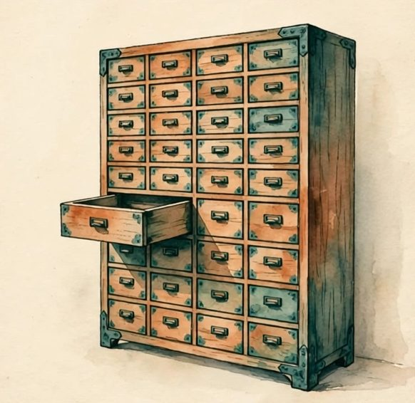
A tall cabinet of many small drawers, one drawer standing open.
In the first room stands a tall cabinet of many small drawers, each drawer no larger than a hand. One drawer stands open. Inside it lies a single river stone, grey and unremarkable, worn smooth on one side only. The keeper does not hurry past it. He has learned that a hall about singular things should begin slowly, with something plain held long enough to be seen properly. The cabinet was not built for treasure. It was built for attention, for giving each small thing a place of its own where it would not be lost among larger, louder things nearby.
People arrive at the One-of-One Desk carrying a question they have carried for years, as if it were a weight. What makes me unique. They say it quietly, the way a person might ask the way to a house they once lived in. The keeper listens. He does not reach for a grand answer. Instead he opens the register, a plain book with ruled lines, and turns to an empty page. Every story in this house begins the same way, not with a claim, but with a looking. A name is written down, and then the slower work starts.
The question sounds like a test, but in this house it is treated as a door. Behind it there is no ranking, no contest, no prize for the strangest life. There is only the cabinet, patient and ordinary, drawer after drawer of things that exist once. A bent spoon. A letter never sent. A laugh no one else quite repeats. The keeper closes the open drawer gently at the end of the day. What makes a person singular was never hidden, he thinks. It was only waiting to be noticed without being measured against anyone else in the room.
2A House With One of Everything
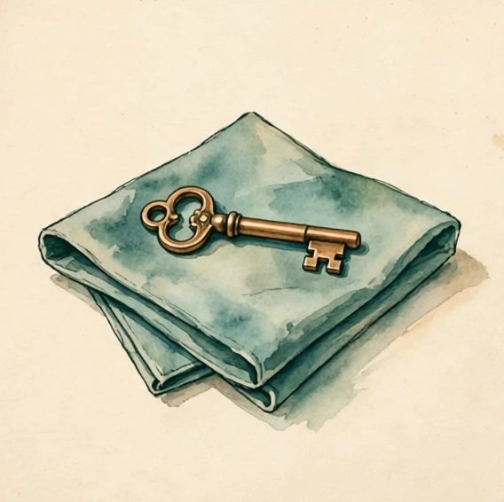
A single brass key resting on a folded cloth.
On the One-of-One Desk, on a folded cloth the colour of unbleached linen, lies a single brass key. It is not labelled. It does not belong to a bunch, and there is no second key cut to match it in any drawer of the house. The keeper polishes it now and then, not because brass needs ceremony, but because a thing kept alone should be kept clean. Visitors often lean closer to look at it, as if a single key might explain itself more clearly than a ring of many keys would.
A house with one of everything sounds, at first hearing, like a house that is lacking. Where are the spares. Where is the matching set. The keeper hears the worry and answers it plainly. Nothing here is missing its partner, because nothing here was made as half of a pair. The key opens one door in this house and no other, and that is enough work for one key. A life, he suggests, is much the same. It does not need a duplicate standing beside it to prove that it was properly made or fully lived.
In the evening the keeper folds the cloth around the key and places it in its drawer, the third drawer down on the left side. The house settles. One chair at the table. One cup by the sink. One lamp lit in the front room. None of it feels lonely to him. A single thing, kept well, has a quiet completeness that a crowded shelf rarely has. The house does not collect copies. It keeps what arrived once, and it keeps it as if once were exactly the right number of times.
3Nobody Arrives Duplicated
Nobody arrives at this house duplicated. The door opens once for each person, and the person who steps through is the only edition of themselves that will ever cross that threshold. The keeper watches from the desk as they come in, shaking rain from a coat or carrying nothing at all. He does not compare the new arrival with the last one. In the register, each name gets its own line, its own date, its own few plain words. There is no column in that book for better or worse, and there never has been.
It is easy to believe otherwise. Photographs repeat a face until the face begins to look common. Crowded streets suggest that lives come in types, the way cups come off a shelf in matching dozens. But a type is only a shortcut the eye takes when it is tired. Look longer, the keeper would say, and the shortcut fails. This one speaks slowly and means it. That one laughs before the joke ends. Another keeps a grief folded so neatly that years pass before anyone notices its edge showing at the seam of ordinary days.
So the house keeps its simple rule. What arrives once is recorded once, without apology and without decoration. No one is asked to be a second version of someone who came earlier, and no one is sent away for resembling a neighbour too closely. Resemblance is a surface. Singularity lives underneath it, in the particular weight of a life as it is actually carried. At night the keeper shuts the register and rests his hand a moment on its cover. A full page of names, he thinks, and not one of them repeated.
4The Keeper of Singular Things
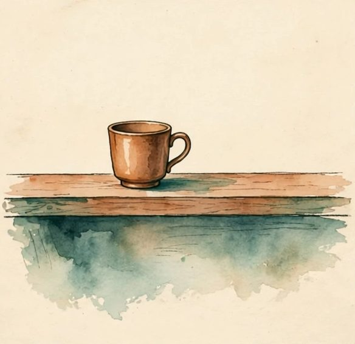
One cup standing alone on a long shelf.
The keeper is an unremarkable man, and he would be the first to say so. He wears the same coat through the winter and keeps his pencils short. His work in this house is simple to describe and slow to do. He receives singular things, he writes them down plainly, and he finds each one a drawer or a shelf where it can rest without being crowded. On a long shelf above the desk stands one cup, alone, with clear space on either side of it, like a word given room on a page.
People sometimes ask what qualifies him for such keeping, expecting a story of loss or a gift for seeing deeply. He shakes his head. He keeps singular things well because he does not try to improve them. The cup on the shelf has a chip at its rim, and he has never once thought of smoothing it away or hiding that side against the wall. What is recorded in the register is what arrived. A keeper who edits the collection to flatter it soon has a cabinet of lies, neat, impressive, and entirely untrue.
There is a comfort in being kept this way, visitors say, though they struggle to name it. Nothing here is asked to perform. The cup is not displayed to prove a point, and the drawers are not opened for applause. The keeper simply makes a place and keeps it made. Perhaps that is the whole of his craft. To look at what is one of one, to write it down without raising or lowering it, and to let it stay. The shelf stays long. The cup stays single. The house stays quiet around them.
5One of One Is Not a Compliment
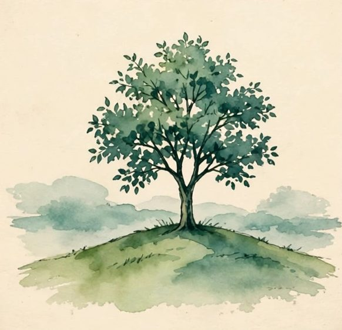
A lone tree standing on a green hill.
Beyond the house, on a green hill that the front window frames like a picture, stands a lone tree. It was not planted to be admired. It gives shade to no bench and shelter to no house, and most days nobody looks at it at all. The keeper looks, sometimes, while the kettle warms. He does not call the tree special. Special is a word for occasions, for days set apart. The tree is not set apart. It is simply the only one growing there, doing the ordinary work of a tree, alone because that is where its seed fell.
One of one is not a compliment, and the house is careful with the difference. A compliment can be withdrawn. It depends on the mood of the speaker, on company, on fashion. What this hall keeps is plainer and steadier than praise. To say a thing exists once is to state a count, nothing more and nothing warmer. Yet there is a strange relief in hearing it said as a count. A person who is one of one does not have to earn the description anew each morning, the way a compliment must be earned again.
The keeper writes it that way in the register, in his plain hand, without underlining. One. Not remarkable, not celebrated, just counted truly. Visitors who expected flattery sometimes leave a little disappointed, and then, a street or two later, a little steadier. The tree on the hill does not know it is singular. The drawers in the cabinet do not know it either. That is the point the house returns to, evening after evening. Singularity is not a feeling a thing must hold. It is a fact that holds the thing, whether anyone notices or not.
6The Most Common Thing in the World
In the morning the keeper opens the front door and looks out at the street, where the world is already busy being singular. No two sparrows on the wire are marked alike. No two loaves in the baker's window have browned in quite the same pattern. Even the stones of the wall across the road differ, stone from stone, in weight and grain and the way each takes the light. He stands a while with his hand on the door frame. The most common thing in the world, he thinks, is a thing that exists only once.
This is the quiet turn at the heart of the house. People come to the desk fearing they are ordinary, as if ordinary were the opposite of singular. The keeper opens a drawer and shows them two buttons, both plain, both brown, neither one the twin of the other when held close to the light. Being one of one is not a rare distinction handed to a few. It is the general condition, shared by everyone who has ever arrived. What is shared by all cannot set one person above another, and that, in this house, is counted as good news.
By afternoon the cabinet holds the point better than any speech could. Drawer after drawer, nothing repeated, and yet nothing in the room feels strange or startled by itself. Singularity, kept at this scale, looks less like a wonder and more like weather, something everywhere and therefore easy to miss. The keeper makes tea and drinks it without ceremony. Outside, the street goes on being unrepeatable in every particular. Inside, the house does the same, one drawer, one cup, one key at a time, and finds the arrangement restful rather than grand.
7A Fact, Not a Medal
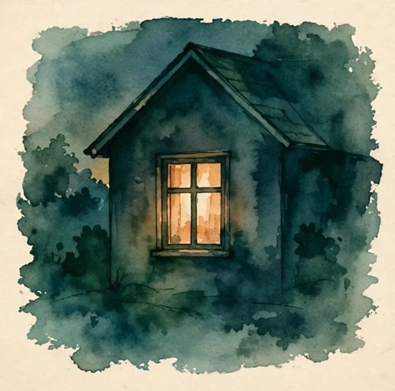
One window lit warm in a dark house at dusk.
At dusk the house across the lane is dark except for one window lit warm, where someone is reading or mending or simply sitting where the light is. The keeper sees it from his own window most evenings. The lit window is not the best window in that house, nor the largest. It is only the one that is lit. He thinks of it when visitors speak of singularity as if it were a medal, something pinned on for merit, bright and round and earned in front of witnesses who clapped.
A medal is given by others, and what is given can be argued over, compared, or quietly taken back. A fact answers to none of that. The register on the desk does not record achievements. It records arrivals, particulars, the way a life is actually put together. This one rises early. This one keeps every ticket stub. This one cannot pass a dog in the street without stopping. None of it would win anything. All of it counts, because singularity lives in the combination, in how plain pieces are arranged in one life and no other.
Late in the evening the keeper closes the register and turns down his own lamp. Across the lane the one lit window is dark now too, its day of being noticed over, its fact unchanged. A medal sleeps in a drawer and waits to be admired. A fact does not wait for anything. It simply stays true through the night, asking for no witness, no ceremony, no polishing. The house is dark and ordinary and entirely itself. In the morning, the keeper thinks, that will still be more than enough to begin with.
8The Inventory Begins
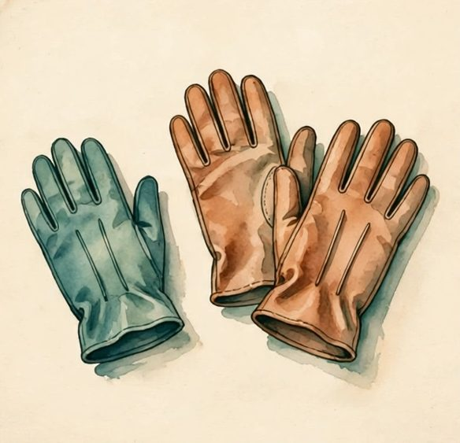
An odd glove lying beside a matched pair.
The inventory begins with gloves. In the top drawer of the cabinet lies a matched pair, neat and folded, and beside them a single odd glove, brown where they are black, its thumb worn thin. The keeper lays all three on the desk in a row. A visitor asks why the odd one is kept at all, since it matches nothing and warms only one hand. The keeper turns it over slowly. Because it arrived, he says. The inventory in this house does not start by sorting the useful from the rest. It starts by writing everything down.
This is where quirks enter the register, and they enter it as plain entries, not as apologies. A way of humming while working. A dislike of bridges. A habit of reading the last page of a book first. The keeper writes each one in the same hand as everything else, neither larger nor smaller. A quirk, in this house, is data. It tells how a life is shaped from the inside, the way the worn thumb tells how the glove was used. Left out of the record, a person reads flatter than they are.
By the end of the first page the inventory is already unlike any other page in the book, though every item on it is ordinary. That is the slow surprise the desk offers everyone who stays long enough to read a page through. No single entry is remarkable. Together, they could belong to no one else. The keeper returns the gloves to their drawer, the pair and the odd one side by side. The cabinet closes on them without comment. The house keeps what the world might have thrown away, and calls that keeping by its right name.
9You Do Not Have to Be Rare to Be Singular
On the sill by the desk sits a plain white shell among grey pebbles gathered from the lane. The shell is not rare. The same shore gives up thousands like it every winter, and children carry them home by the pocketful and forget them by spring. The keeper kept this one. Not because the sea made only one, but because this one came into this house, on a particular day, in a particular coat pocket, and took its place on the sill. Its singularity did not travel with it from the beach. It gathered here, slowly, among these things.
Rare is a word about scarcity, and scarcity is a word about markets and collectors, about how many remain and what the few will fetch. The house has no use for it. A person does not become singular by being hard to find, any more than the shell became singular by being hard to gather. Common things, lived in a particular combination, make a singular life. One taste, one trade, one small town, one old sorrow, arranged as no one else has arranged them. The arrangement is the signature, and it cannot be copied by copying any single part.
So no one at the desk is asked to produce a rarity, to prove that some part of them exists nowhere else on earth. The keeper would not know how to record such a proof, and his register has no space for it. What he records is nearer and plainer. How this shell, of all the shells, came to rest on this sill, in this light. Outside, the shore goes on giving its thousands. Inside, one shell holds its place among grey pebbles, common as anything, and entirely, quietly, one of one.
10The Cabinet Is Not a Competition
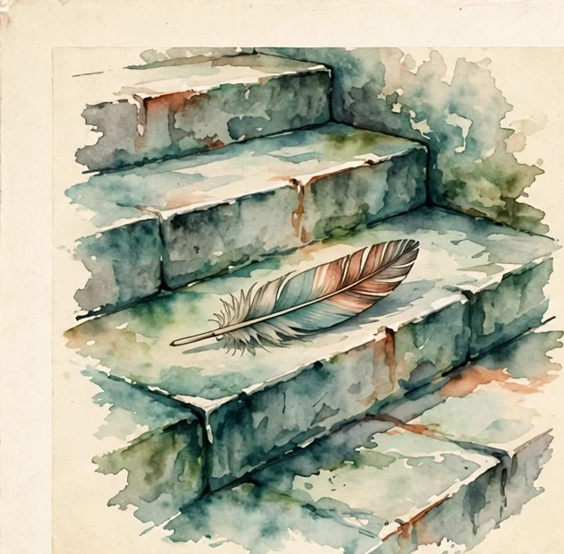
A single feather resting on stone steps.
On the stone steps outside the house, one morning, lies a single feather, grey and white, still dry after a night of rain. The keeper picks it up and carries it inside, not to begin a collection of feathers, but because leaving it felt like leaving a sentence unfinished. He lays it on the desk beside the register. It will go into a drawer of its own, as everything does here. No drawer in the cabinet has ever been opened in order to be compared with the drawer beside it.
A competition needs a finish line, judges, a way of keeping score that everyone accepts. The cabinet keeps no score. Its drawers are not ranked from the remarkable at the top to the plain at the bottom, and the keeper would struggle to say which drawer he would save first from a fire. The feather and the brass key and the odd glove rest under the same roof on the same terms. To be kept here, a thing does not defeat other things. It only has to have arrived, and to be written down truly.
Visitors leave the house more slowly than they entered it, the keeper has noticed, as if something unhurried in the rooms had set their pace. There was no contest to lose here, and nothing to win except a quieter way of counting themselves. One. The word follows them down the stone steps where the feather lay. Behind them the cabinet stands tall in the first room, full of singular things, none of them competing, all of them kept. The keeper turns a page of the register, rules a fresh line, and waits for whoever arrives next.
11No Two Shelves Alike
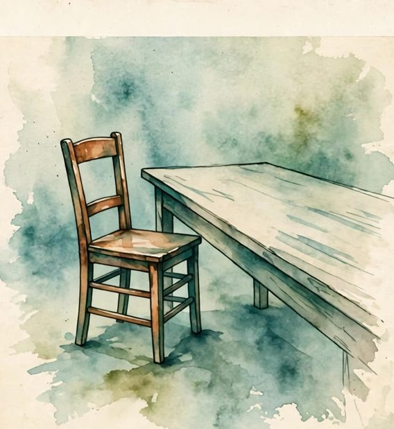
One chair at the head of a long empty table.
In the first hall the keeper keeps a long table, and at its head a single chair. No other chairs are set along its sides. The table is not waiting for a meeting. It is a place to lay things out in a row and look at them honestly, one shelf beside another, without crowding them together. On Monday he lays out the contents of one shelf. On Tuesday, another. The wood of the shelves is the same. What they hold never is, not in weight, not in order, not in the small marks left by use.
It would be easy to wish for a tidier cabinet, where every shelf repeated the last and nothing surprised the hand. The keeper does not wish for that. A shelf of smooth river stones does not fail because the next shelf holds keys. A shelf of folded letters is not lesser than a shelf of tools. Each was gathered by a different season of a life, and the difference is not a ranking. It is simply the record of where attention went, and what was kept when other things were let go without regret.
You are allowed the same arrangement. Some parts of a life are crowded, some are spare, some hold objects no visitor would think to ask about. That unevenness is not a flaw in the shelving. It is the shelving, telling the truth. At evening the keeper pushes the single chair back in, straightens nothing that does not need straightening, and leaves the table clear. In this house, no two shelves alike is not a problem to solve. It is the ordinary, settled fact the cabinet was built to hold. The house asks nothing more than that it be noticed, once, and then let be.
12The Door of the Cabinet
Every cabinet in this house has a door, and the tall cabinet of small drawers is no exception. The door is plain, without carving, and it closes with a soft, definite sound. The keeper closes it at the end of the day, not to hide what is inside, and not to guard it from thieves. He closes it because a thing kept well does not need to stand open at all hours. Rest is also a form of keeping, and a closed door gives the drawers their quiet. It has stood there longer than anyone now working in the house can remember.
A visitor once asked why there was no glass in the door, so the singular things could be seen without opening it. The keeper said glass would turn keeping into showing, and showing invites comparison from everyone who passes. Behind wood, each drawer holds its one thing without having to explain itself to the corridor. Singularity, in this house, needs no audience and no certificate pinned beside it. It is enough that the register at the One-of-One Desk records what is there, plainly and without praise. The drawer is not diminished by being unseen, and neither is the person it belongs to.
So the first hall ends here, at a closed door. Beyond it the house continues, and the body will speak in its own hand in the rooms ahead. For now the keeper turns the key, leaves it in the lock, and writes the day's last line. Nothing inside has become more valuable for being shut away. Nothing has become less. The door simply says what the whole cabinet has been saying: these things are one of one, they are kept, and that is sufficient. Tomorrow it will open again, in its own time, for its own reasons, and for no other.
13The Body's Signature
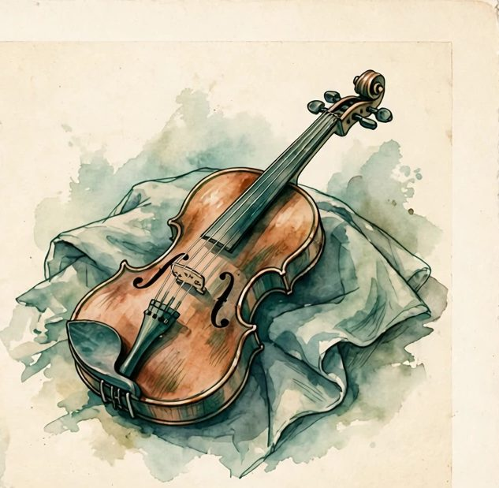
An old violin resting on cloth, its varnish worn where hands have held it.
The second hall begins not with a drawer, but with an old violin resting on cloth upon the One-of-One Desk. Its varnish is worn thin where hands have held it for years, and one string is newer than the others. The keeper does not play it. He keeps it because it shows, in wood and wear, what the next rooms are about. Before a person says a word or writes a name, the body has already been signing its work in a hand no one else can copy. The cloth beneath it is plain linen, kept clean for this purpose alone.
No single mark makes the signature. It is the combination that no other body repeats in full: the length of a stride, the set of the shoulders, the way breath is taken before speaking, the small preferences of the hands. Taken one by one, each trait is common enough. Laid together, as the violin is varnish and string and scar together, they form a pattern that occurs once. The keeper enters this in the register without emphasis. A fact does not need underlining to remain a fact. The keeper has never found two alike, and he has stopped expecting to.
There is comfort in beginning here, with the body rather than with achievement. A signature is not earned, and it cannot be lost in a bad season. It is present on tired days and on ordinary days alike. The keeper folds the cloth back over the violin and opens the next drawer in the tall cabinet. What follows are only closer readings of the same quiet truth: the body was singular long before anyone thought to ask whether it was. It was there in childhood, and it will be there, altered and itself, at the very end.
14A Voice No One Else Has
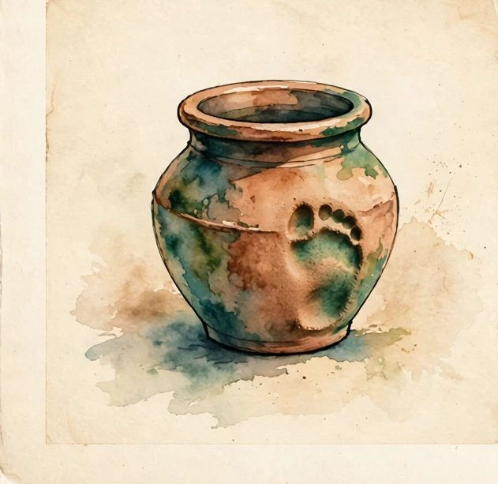
A clay pot with a thumbprint pressed in its side.
On a low shelf stands a clay pot, unglazed, with a thumbprint pressed into its side where the maker steadied it while the clay was wet. The print was not decoration. It was a hand doing its work, and it stayed. The keeper keeps the pot near the door of this room because a voice is much like that print. A person speaks to give directions, to ask for bread, to answer a name, and without intending anything remarkable, leaves the mark of a single throat, a single breath. The pot still holds water perfectly well.
Two people can say the same sentence and not say it the same way. The words are shared property. The pace is not, nor the roughness at the edge of a note, nor the pause before a difficult word, nor the way laughter sometimes arrives inside a sentence uninvited. None of this makes one voice better than another. A low voice is not a failed high voice. A slow voice is not a broken fast one. They are different pressings of the thumb, each complete, each legible to those who listen often.
The keeper has heard visitors lower their voices in this room, as people do among singular things. He never asks them to. Something in being surrounded by one-of-one objects makes a person aware of being heard, perhaps for the first time without judgment. They leave still sounding exactly like themselves, which was always the point. In the register he writes no descriptions of voices. He only notes that each person who spoke in the hall was recognised by sound alone, around a corner, without being seen. That recognition needs no explanation, and the house offers none.
15The Way You Walk Into a Room
The keeper can tell who has entered the house before he looks up from the One-of-One Desk. Not by announcement, and not by any performance. By the small sequence of sounds and movements each person brings through a doorway: the pause on the threshold, the step taken quickly or taken slowly, the coat hung at once or carried a while longer in the arms. A room receives everyone differently, because everyone arrives carrying a different distribution of hurry, caution, habit, and hope. The threshold is low, the light is ordinary, and still the arrival is always particular.
No one taught this entrance, and that is why it is honest. As a child, a person learns to walk, and then spends a lifetime forgetting they learned it, so the walk becomes theirs without rehearsal. It changes with age, with injury, with joy, with a heavy bag or an empty afternoon, and still it remains recognisable to those who love them. The combination shifts and yet holds. A gait is not a single trait to be measured against a standard. It is a sentence the body writes every time it crosses a floor.
There is no correct way to enter the rooms of this house. The keeper does not rise for one visitor sooner than for another, and the tall cabinet does not open a finer drawer for a grander step. To walk in as oneself, unadjusted, is enough. By evening the floorboards have recorded a dozen crossings, none of them alike, all of them welcome. The keeper writes the last line of the day and closes the register on that simple, repeated evidence. No two crossings have ever sounded quite the same on those boards.
The One-of-One Desk
One desk receives all correspondence for this cabinet — questions, corrections, greetings, and word of any singular thing of yours that the world has lately tried to file under ordinary. It is read in the order it arrives.
16Laughter, Unmistakable
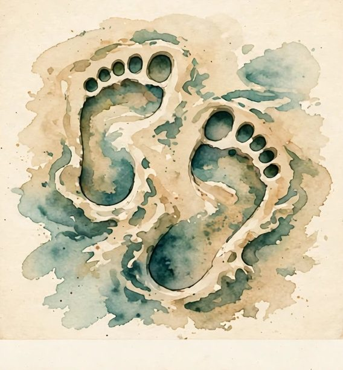
One set of footprints in wet sand, turning once toward the water.
In wet sand, one set of footprints can be followed along the shore, turning once toward the water and then continuing. The keeper keeps a drawing of such a track pinned above the One-of-One Desk, though the hall is far from any sea. He keeps it for laughter, oddly enough. A laugh, like a footprint, is a brief impression left by a body passing through a moment. It vanishes from the air at once, and yet anyone who knows the person could pick it out of a crowded room. The tide will take it by evening.
Laughter is not chosen from a catalogue. It arrives in the shape the body gives it: short and surprised, or slow and rolling, or almost silent, with the shoulders doing the work. People sometimes apologise for their laugh, as they apologise for a quirk, and the keeper finds the apology unnecessary. A quirk is data, not a defect. It tells where delight actually lives in a person, as opposed to where politeness would place it. The register has no column for correcting what was never wrong in the first place.
On good days laughter moves through this quiet house without asking permission, and the drawers of the tall cabinet seem less solemn for it. The keeper does not record the jokes. He records only that the sound was recognised, instantly and by everyone present, as belonging to one person and no other. That is the whole entry. When the page is full he will start another, in the settled knowledge that being unmistakable in joy is the most ordinary distinction a person can carry. Joy, in this house, is never required to explain how it sounds.
17Hands Remember Their Own Way
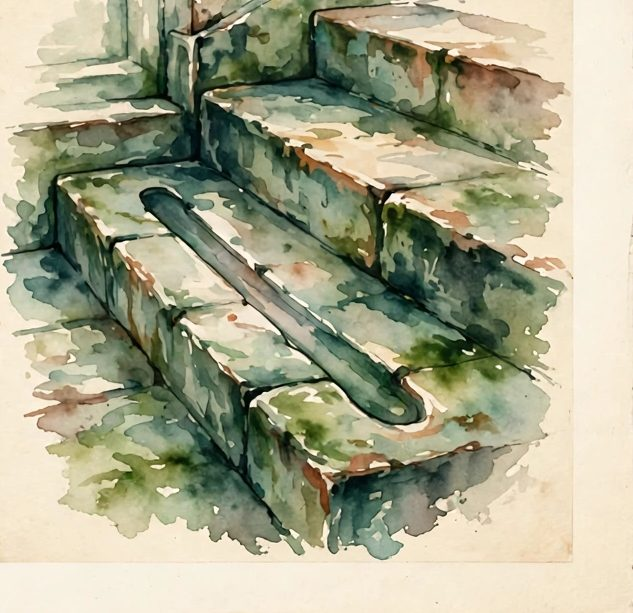
A worn stone staircase with a smooth groove where feet have fallen for years.
A worn stone staircase carries a smooth groove down its centre, where feet have fallen in the same places for years. No foot made the groove alone. It is the work of repetition, of a body returning to its own pattern thousands of times without thinking. The keeper thinks of that groove whenever he watches hands at work in this house: setting down a cup, turning a key, folding a cloth. Each pair of hands falls into its own places, and over a lifetime the pattern deepens into something unmistakable.
Hands learn their own way early and keep it faithfully. One person ties a knot that no instruction book contains. Another writes a list, mends a seam, or kneads dough with a small extra movement that a teacher never taught and a lifetime never removed. These are not inefficiencies to be trained away. They are the combination again, made visible in motion: strength, habit, old injuries, patience, and preference, working together in a sequence that belongs to one pair of hands alone. A lifetime of small repetitions writes itself plainly into every ordinary task.
In the evening the keeper watches his own hands close the tall cabinet, drawer by drawer, and notices they know the order without him. He is not proud of this, exactly. He is reassured by it, as one is reassured by a staircase that has held. The groove in the stone is not damage, and it is not decoration either. It is proof of faithful use over time. So it is with hands, and the quiet work they remember how to do. The work continues tomorrow, in exactly the same faithful way.
18Scars Are Records, Not Reviews
After rain, the windowsill in this room is darkened along one edge, and it dries slowly through the afternoon. The keeper does not sand it back or paint it over. The dark line simply records that weather came, that water stood there a while, and that the house went on standing afterwards. He keeps the sill as it is, in the same spirit in which this hall treats a scar: not as damage to be hidden, and not as glory to be displayed, but as a record, plainly kept. By morning it will be dry again.
Every body that has lived for any length of time carries such records. A childhood fall, a kitchen accident, a day of work that asked more than expected. The mark remains after the healing is finished, and it says only what happened, not what the person is worth. The keeper is firm on this point in the register. Scars are records, not reviews. They do not grade a life, they do not sum it up, and they do not require an explanation for visitors who happen to notice them. It belongs in the record, quietly, without comment.
What matters to the house is simpler, and kinder. The weather was survived, the season turned, and the person continued into the next room carrying the record with them. That continuation is ordinary, and it is enough. At dusk the sill has dried to its usual colour, except for the faint line that will always be slightly darker. The keeper notes the rain in his book, closes it, and leaves the line exactly where it belongs: in the past, legible, and finished. Nothing more is asked of it, and nothing more is asked of them.
19The Face in the Mirror Is a First Edition
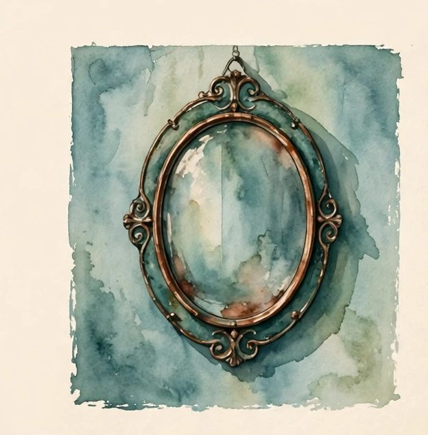
An antique oval mirror on a wall, its silvering soft at the edges.
An antique oval mirror hangs on the wall of this room, its silvering soft and clouded at the edges. It does not flatter, and it does not accuse. It returns what stands before it, a little dimmed by age, which the keeper considers an honest way to meet a face. A face, after all, is the first singular thing most people ever learn to read. Long before a name is remembered, a face is recognised across a street, in a crowd, in poor light. The glass is slightly green, as old glass often is, and entirely clear enough.
No single feature carries that recognition. Not the eyes alone, not the line of the jaw alone, but the combination, and the way the combination moves: the particular readiness to smile, the set of the mouth in thought, the expression that arrives before its owner knows it is there. Like a first edition, a face is printed once, with all its small irregularities belonging to that printing. Later years add their notes in the margins, but the edition does not change its identity for being annotated. A copy may resemble it closely, and still miss the person entirely.
The keeper does not permit comparisons at this mirror. No one is invited to stand beside another and be measured. Visitors look, adjust a collar or do not, and pass on into the next room exactly as singular as when they entered. That is all the mirror has ever asked. In the register there are no descriptions of faces at all. There is only a list of names, each written once, each known on sight, each sufficient in itself. The mirror keeps nothing, which is why everyone can trust what it briefly shows.
20Handwriting, the Visible Accent
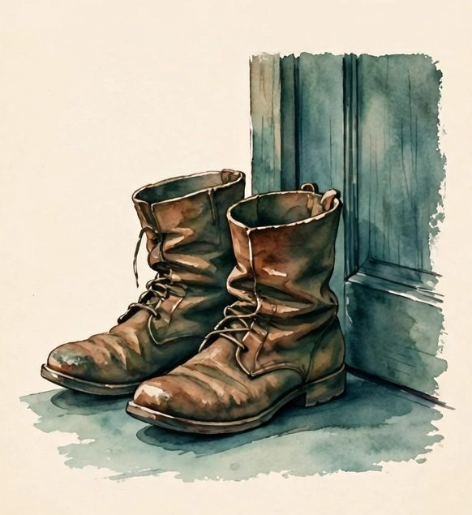
A pair of well-worn leather boots by a door, resting after the road.
A pair of well-worn leather boots stands by the door of this room, resting after the road. Their owner is elsewhere in the house, writing at the One-of-One Desk, in no hurry to finish. The keeper chose boots for this room because handwriting is a travelling thing. It goes out into the world on lists and letters and margins, and it carries its maker's accent with it, visible to anyone who has seen it before, as surely as boots carry the shape of the feet that walk in them. The boots wait without impatience, as good travelling things learn to do.
An accent in speech is heard. An accent in writing is seen. It lives in the slope of the letters, the joining or not joining of one word to the next, the dot placed firmly or floated above its stem, the capital that leans like a person setting off downhill. Schooling teaches everyone roughly the same letters, and still no two hands keep the lesson in quite the same way. The combination escapes uniformity quietly, line by line, until a page could be recognised unsigned, across a room, by a friend.
The keeper files such pages in the tall cabinet without correcting a single slope. To straighten the writing would be to remove the accent, and the accent is the evidence this whole hall exists to keep. By the door, the boots have dried. Their owner will pull them on, take up the finished page, and walk out sounding, on paper, entirely like himself. The register closes on that soundless voice, still speaking, recognisably, from the page. The keeper closes the drawer on it gently, and turns, satisfied, toward the quiet door.
21Small Print: Sighs, Sneezes, Yawns
In the tall cabinet there is a drawer too small for most things people think to keep. The Keeper of Singular Things keeps it for the small print of a body. A sigh that falls at the end of a sentence. A sneeze that arrives in twos, never one, never three. A yawn that starts before a meeting has even begun. None of these were chosen. None were practiced in a mirror. They simply happen, in the same shape, year after year, while larger habits are learned and unlearned around them.
It would be easy to call these things nothing. They prove nothing, earn nothing, and impress no one at a table. Yet the keeper writes them down because they are honest in a way deliberate gestures rarely are. A person can rehearse a laugh and borrow a walk, but the small, involuntary notes keep their own time. They are data, not defects, the quiet ticks by which a household knows who has come home tired, who is catching a cold, who is trying not to cry at the sink. The keeper hears them from the corridor and knows, without looking, exactly who is passing the cabinet.
Late in the evening the keeper closes the little drawer without locking it. There is nothing in it worth stealing and nothing in it that needs defending. The sigh will come again tomorrow, in its own form, and so will yours. That is the comfort the cabinet offers, again and again. Singularity is not always grand. Sometimes it is only the small print under a life, written by the body itself, legible to anyone who has loved you long enough to read it. The house is full of such small, faithful signatures, none of them loud, all of them kept with equal care.
22The Body Keeps Its Own Style
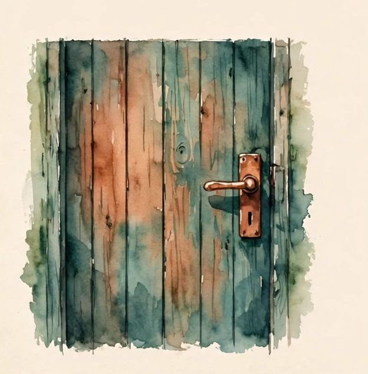
A wooden door whose handle is worn bright by years of one hand.
The door to the cabinet room is plain wood, dark at the edges, except for its handle. There the brass has been worn bright, not evenly, but in one smooth place where a thumb and fingers have landed ten thousand times. No one polished it on purpose. The shine is an account, kept without intention, of how one particular hand meets the world. The body, the keeper says, keeps its own style in the same way, whether anyone has named it or not. Beside it hangs no other handle quite like it in the whole house, though every door began the same.
Consider the way shoulders settle under a coat, or how a head tilts when listening to something difficult. Each detail alone is common enough. Another person somewhere tilts a head the same way. But the combination, repeated across a kitchen, a staircase, a lifetime of doors, makes a pattern no second body reproduces exactly. Style here is not fashion and not performance. It is simply what remains when effort stops, the shape habit carves into wood and muscle alike, without asking for applause. It is written in the body the way the bright place is written in brass, slowly and without revision.
The keeper does not varnish over the bright place on the handle. To restore the door to sameness would be to erase the record it has honestly kept. So the house leaves it shining. You may think you have no style worth noting, nothing distinct in how you move through a room. The doors you touch would disagree, gently. They remember the angle of your hand. In this house, that quiet evidence is enough, and it asks for no certificate to be true. The other doors in the house, each worn in its own place, would tell a similar story about other hands.
23Growing Older, Still One of One
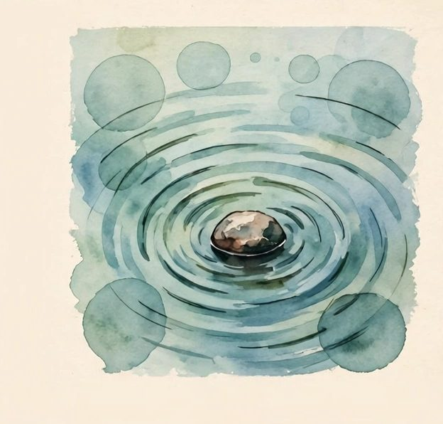
Ripples spreading from one stone in a still pond.
Behind the house there is a still pond the keeper visits when a drawer has been hard to close. Throw one stone and the water answers in widening circles, each ring larger and fainter than the last, none of them the stone and all of them caused by it. Growing older is recorded in the cabinet in much the same manner. The early entries are sharp and close. Later entries spread wider, touch more banks, and carry the first splash farther than it ever could have travelled alone. The keeper counts the rings sometimes, not to measure them, but to watch how far a single moment can travel.
Age changes the combination, and that is the point the register insists on. Hair, gait, eyesight, patience; each shifts in its season, sometimes with loss the keeper does not try to soften. Yet a changing combination is not a fading one. The stone is not less itself for having moved the whole pond. If uniqueness were a rank, age might be argued down. If it is a fact, as this house holds it to be, age only adds entries. No year subtracts the one-of-one condition. It reseasons it. What arrives later in the register is not a lesser version of the early hand. It is the same hand, seasoned.
By dusk the pond is still again, and no ring remains to prove the stone was there. The keeper returns to the desk anyway and writes the date in the register, because the house trusts paper more than water. You do not need the ripple to persist for the casting to have happened. Years from now, the entry will be there, in a steady hand. One stone, one pond, one widening life, kept without anxiety among all the others. In the morning another stone may fall from another hand, and the pond will answer it in rings entirely its own.
24Signed Without Asking
At the back of the register there is a page the keeper did not fill in. It holds no list of achievements and no account of choices, only the marks a body made before choice was possible. A whorl on a thumb. A left hand that took charge early. A voice that settled where it settled. The page reads less like a claim and more like a signature, entered at the start of the book in a hand nobody in the house recognises and nobody would dare to forge. The ink of it has not faded, though the page has yellowed and the binding has loosened around it with use.
No one was consulted. That is the plain fact this hall ends on, and the house refuses to treat it as an injustice. The body signed its owner without asking, as rain signs a roof and use signs a staircase. Some of the marks are welcome, some are merely borne, and most are simply there, unnoticed for decades. Still, taken together they settle the question the cabinet was built to answer. Before a life had done anything at all, it was already not interchangeable with any other life kept here.
The keeper turns the page and does not attempt to improve the signature. In the One-of-One Desk there is no drawer for corrections of this kind. What was signed without asking needs no second signing, no audience to witness it, and no performance to renew it. It holds. When the cabinet is closed for the night, Hall by hall, the book stays as it was written. Your name was in the house before you arrived to read it. That has always been enough. The cabinet does not ask its entries to earn what was given at the beginning, before any earning was possible.
25The Accent of a Life
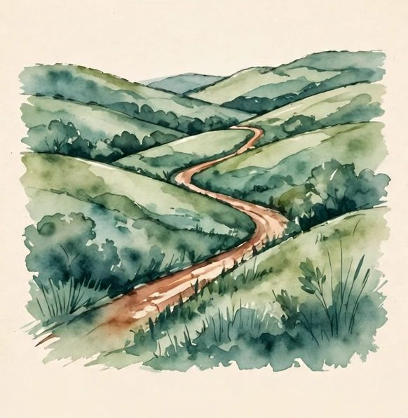
A road winding through green hills, disappearing and returning.
From the upper window of the house you can see a road winding through green hills, losing itself behind a rise and then finding itself again in the valley. The keeper chose that view for the opening of this hall. A life, like a voice, has an accent, he says, and an accent is mostly a road remembered. It is the sound of where a person has been, carried into every new sentence, no matter how carefully the words themselves are chosen or how far the speaker has travelled since.
An accent in this sense is not only speech. It is in how a table is laid in a town you left at twenty, how a season is expected to behave, which distances feel near and which feel far. Remove any one influence and another person might share the rest. The combination is what speaks. Nor does the house rank accents, any more than it ranks the drawers in the cabinet. Each is a fact of seasoning. Each tells the truth about a road, if you listen without correcting it.
The road outside does not apologise for its windings, and the hills do not ask it to run straight. At the desk, the keeper opens a fresh page and writes place-names at the head of it, one life at a time. Yours is among them, in your own spelling. However your days sound to strangers, in this house they are heard plainly, as weather is heard from a valley farm. Unmistakably from somewhere. Unmistakably your own, and in good company everywhere. At night the road is empty and still entirely itself, which is all the keeper has ever asked of an accent.
26Born Somewhere Specific
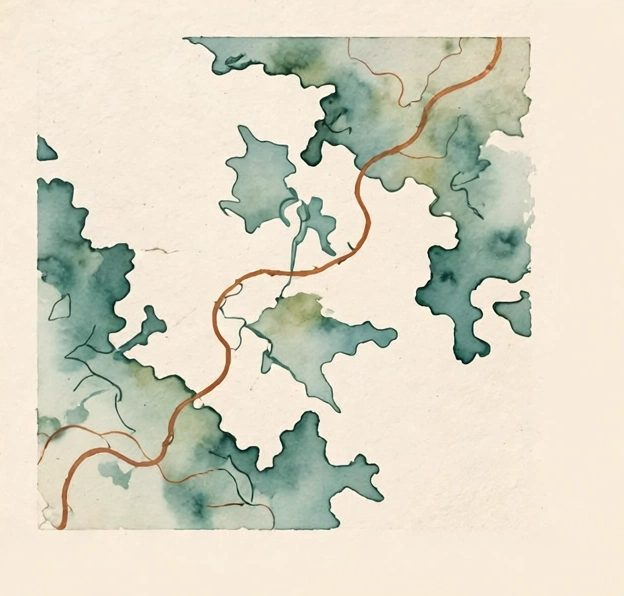
An old map with one route drawn in faded ink.
On the wall above the One-of-One Desk hangs an old map with one route drawn in faded ink, from a town most visitors have never heard of to the place where the house now stands. The keeper keeps a map like it for every entry in the register. Not because the town was grand or the route was heroic, but because everyone in the cabinet was born somewhere specific. A named street, a particular light, a river running one way and not the other. General beginnings produce no one in particular.
The specific place seasons a life before the life can object. It decides which birds are ordinary and which are wonders, what a winter honestly means, how loudly a house is allowed to laugh after dark. Another child on the same street received the same weather and grew entirely otherwise, which is the house doctrine again. Place alone is not unique. Place in combination, laid under one particular temperament and one unrepeatable household, becomes a beginning no later address can revise or replace. The first school, the first winter, the first distance all arrived unnamed, and stayed in the combination for good.
Sometimes a drawer holds a ticket stub, a key to a door that no longer exists, a coin from a currency the map has outlived. The keeper files them without nostalgia taking charge of the room. You are not asked to praise where you began, or to return to it, or to let it govern what comes next. Only to let the register state it plainly. Born somewhere specific, as everyone here was. The ink line stays on the map, faded and accurate, under all the roads added since. Other drawers hold other beginnings, drawn in other inks, and the map wall makes room for every one of them.
27The Roads That Made the Map
Below the map the keeper keeps a shelf of folded papers, each one creased hard along the roads its owner actually travelled. Some folds are school routes and work routes, worn soft with repetition. Others mark a single crossing, made once and never repeated, that changed the direction of everything folded after it. Spread flat, the papers would never agree with each other. That disagreement is the collection. The roads that made the map were not the shortest ones. They were the taken ones. The keeper labels each bundle in pencil, with a name and a date, and nothing more than that is needed.
A life often tries to edit this shelf, presenting the planned route as the real one and discarding the detours as waste paper. The house does not permit the edit. The register records the town where the work ran out, the year spent in a place nobody chose for its beauty, the long way round taken because the short way was closed. Alone, each road is unremarkable; thousands have travelled it. Folded into one bundle, in one order, under one name, they form a map that exists exactly once in the world.
In winter the keeper takes the bundle down and smooths each sheet once, not to flatten the creases but to keep the paper from tearing along them. The creases are the information. Your map, handled this way, needs no defence and offers no lesson to strangers. It simply shows where the weight of living has pressed, year upon year. Put back on the shelf, it rests easily among the others. No two folds alike, and no fold required to justify itself. The shelf itself is ordinary pine, scarred and steady, pleased to hold so many different journeys in so little space.
28Languages in the Attic
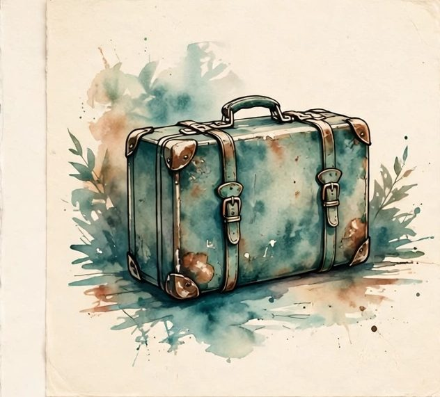
A worn suitcase with scuffed corners, its labels half torn away.
In the attic of the house, among boxes nobody opens in haste, stands a worn suitcase with scuffed corners and labels half torn away. The keeper stores languages in it, or as near to storing them as a house can manage. A first tongue learned at a kitchen table. A school language, kept neatly and used rarely. A few dozen words of a grandmother, a neighbour, a port, a marriage. Open the lid and they do not lie in rows. They settle over each other like clothes packed by different hands.
No single language in the suitcase is rare, and the keeper would be the first to say so. Millions carry the same words through the same mornings. The singularity is in the packing. Which language holds the counting and which holds the praying. Which one the dreams arrive in, and which one fails first under grief or fever. Such arrangements are data, quietly gathered over a lifetime, and no examination has ever measured them. They need no certificate. A person may not even know the order until the suitcase is opened by illness, travel, or old age.
The attic light is poor, and the keeper does not stay long among the boxes. He closes the lid, leaves the scuffs as they are, and writes one line in the register downstairs. Languages kept, in this order, for this one. Your own mixture, however modest it seems beside fluent neighbours, has been carried by exactly one traveller along one road. In this house that is not a small thing. It is simply, and sufficiently, a singular thing, stored with care. The stairs creak on the way down, in their own familiar language, and the register receives the line without comment.
29The Decade That Seasoned You
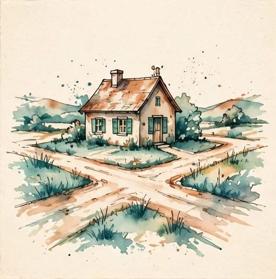
A small house at a crossroads, lamplit in the early evening.
The plate the keeper chose for this drawer shows a small house at a crossroads, lamplit in the early evening, with four roads leaving it in four weathers. It stands for the decade that seasoned you, whichever decade that was. For one entry in the register it was the twenties, all departures. For another, a quieter ten years in the middle, when nothing seemed to happen and everything settled. The house at the crossing does not hurry. It watches a life spend long enough in one season to take on its flavour.
Seasoning is slow work, and it cannot be faked by brief contact. A decade of small wages teaches the hands one kind of care. A decade of raising, or waiting, or rebuilding after a plain disaster, teaches another. Taken singly, each year resembles a neighbour year in a thousand other lives. Taken together, ten of them in that order, met by that person, they produce a taste no other kitchen in the cabinet reproduces. The keeper records decades the way cooks record salt. Not as rank. As the difference you can actually perceive.
Crossroads houses are often passed without a glance by travellers intent on the road. The register glances, and writes the ten years down in full. When you look back and find a decade plain, or hard, or strangely golden, the house does not ask you to grade it against another life at another crossing. It was your seasoning, at your crossing, in your weather. The lamp in the plate burns the same for every drawer here. That sameness is the comfort. The flavours are the singularity. The keeper writes the decade plainly, lamp and crossing and all, and then turns the page toward whatever comes next.
30Wrong Turns, Kept
Every register has entries the writer once wished to tear out. In this house, the page with the wrong turn stays in the book, crossed through lightly, and left legible. The keeper is firm on the method. A road taken to the wrong town. A year given to the wrong work, the wrong promise, the wrong silence. Such lines are not displayed, and they are not hidden. They are kept, in the same steady hand as all the rest, because a cabinet of singular things has no use for a cleaned-up life.
A wrong turn alone is common property; the roads are full of them, and the maps on the shelf are creased with other people's mistakes as readily as with yours. The singularity lies in the combination again: this error, met by this person, at this crossing, followed by this particular way of walking back or walking on. Quirks and errors alike are data here, not defects to be burned in the yard. The house has learned more about its entries from the crossed lines than from many of the straight ones.
At closing time the keeper shuts the register on the page without pressing it flat, as if to leave the mistake its small share of air. No shame is entered in the margin, and no moral either. What happened is written, and the book continues past it, which is the only verdict this hall has ever offered. Your wrong turns are kept as yours, among everyone else's, in a tall cabinet in a quiet house. The drawer closes. The record holds. Life, elsewhere, goes on being one of one. Tomorrow the book will open again at a clean page, and the crossed line will still be there behind it, quietly kept.
The One-of-One Desk
One desk receives all correspondence for this cabinet — questions, corrections, greetings, and word of any singular thing of yours that the world has lately tried to file under ordinary. It is read in the order it arrives.
31The People Who Seasoned the Soup
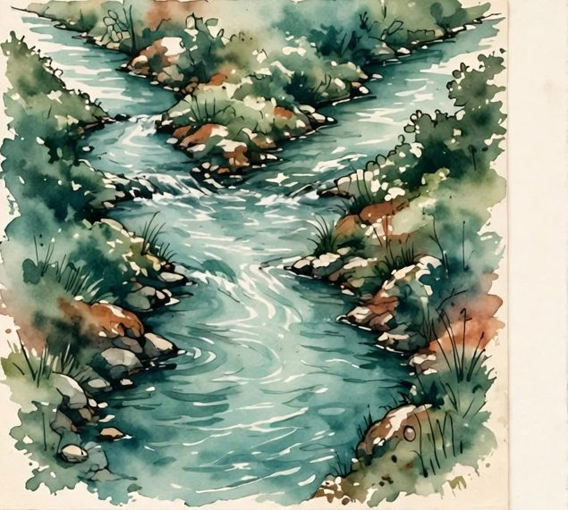
Two rivers joining into one, neither losing its name upstream.
In the cabinet there is a drawer that holds no object at all, only a list of names written in the keeper's careful hand. They are the people who stood near a life early enough to change its flavour. A grandmother who salted generously and apologised never. A neighbour who taught a child to whistle through folded grass. A strict teacher whose single sentence of praise was carried for decades like a coin in a pocket. None of them stayed for the whole story, and yet the story tastes of them still, quietly, in every later chapter.
No one is seasoned alone, though the saying is often forgotten when a person tries to account for himself. He wants his character to be his own work, his own recipe, his own signature on the register. The keeper, who has entered many lives into the book, knows better than to argue. He only turns the page and shows how often the handwriting changes, how a phrase learned at one kitchen table reappears years later at another, softened, altered, but recognisably the same. Influence does not dilute a life. It gives the mixture its depth, the way a second river gives the first a stronger current.
And still the soup is one's own, because no other pot received exactly this seasoning in exactly this order. The grandmother, the neighbour, the teacher belonged to many lives besides this one, and seasoned each differently. What they gave here met what was already simmering here, and the result exists nowhere else. The keeper closes the drawer without ceremony. In the house of singular things, gratitude needs no plaque on the wall. It is enough that the register is honest, and that a name, once written down in kindness, is never quite erased from the flavour of the house.
32A Childhood Address
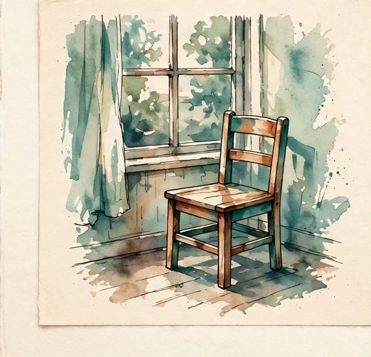
A child's small chair by a window, the light falling where it always fell.
There was a street, and on the street a house, and in the house a small chair placed where a child could watch the weather arrive. The address may be forgotten by the post office now, the building altered or gone entirely, but the keeper keeps its drawer because the address did quiet work. It decided which language the mornings spoke, which bells were heard, which neighbours knocked, which route to school taught the legs their first geography. Before a person chooses anything at all, a place has already chosen a hundred small things for him.
Two children can grow up on the same street and carry away entirely different addresses inside them. One remembers the stairwell and its smell of soup and coal. Another remembers only the window, the chair, the particular slant of afternoon. The cabinet makes no attempt to reconcile these accounts, and the register records both without correction. A childhood address is not the building. It is the angle from which the world was first watched, the height of the chair, the distance from the window to the street, and that angle is set once and never repeated exactly.
Later addresses are chosen, negotiated, signed for in adult handwriting, and they matter. But they are laid over the first one the way new paper is laid over an old page in the register, the earlier writing still faintly visible. The keeper does not call this fate, and he does not call it a wound. He calls it a starting shelf. Everything a life collects afterwards is arranged, whether it knows it or not, in relation to that first small chair, that first window, that first ordinary street where the world began to be singular.
33The Work Your Hands Learned First
Before the qualifications and the titles, there was a first task the hands learned properly. Peeling potatoes in long unbroken ribbons. Folding paper boats that actually floated. Helping an elder thread needles, splice rope, knead dough until it stopped resisting. The cabinet keeps a drawer for these early apprenticeships, though nothing in it would impress a visitor. The keeper understands what the visitor does not. The first work teaches more than its own skill. It teaches a person's original relationship to patience, to materials, to the quiet satisfaction of a thing done completely.
That first work leaves an accent in everything the hands do afterwards. The man who learned carpentry from offcuts measures twice in every trade he enters later, even trades made of words. The woman who learned to mend nets as a girl still approaches a torn argument by finding its knots rather than cutting it away. These are not talents, exactly, and no certificate records them. They are the grain in the wood, set early, running under every later surface. Other people may learn the same trades in the same towns, but the order in which the hands learned them belongs to one life only.
The keeper sometimes opens this drawer for a visitor who believes he began from nothing, who thinks his life started at the first paid hour. He shows him the worn tools, the remembered ribbons of peel, the boats that floated one whole afternoon. Nothing is said about pride. The point is simpler and steadier. A singular life is not assembled from singular parts. It is assembled from common parts, learned in an uncommon order, at an uncommon table. The drawer closes softly. The hands, even empty, remember their first work, and remember it alone.
34Starting Over in a New Place
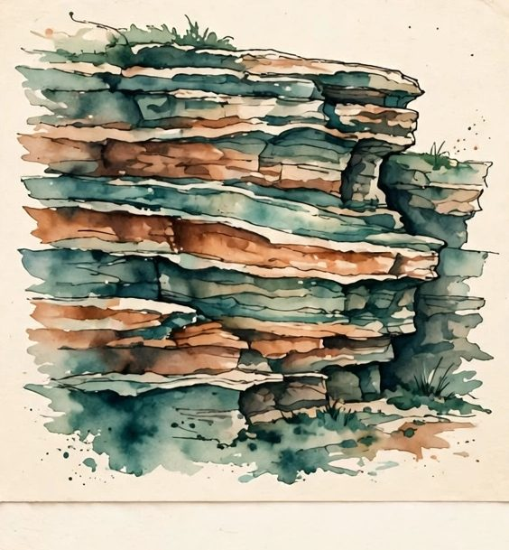
A cliff face of layered rock strata, each band a different colour of earth.
A cliff by the road shows its history in bands, dark over pale over dark, each layer laid down in a different age of the world. The keeper keeps a rubbing of such a cliff in a wide drawer, because it resembles the lives that arrive at the house after a beginning again. A person leaves one town, one language, one trade, one marriage of years, and starts over where nobody knows his name. From the outside it looks like an ending. From inside the drawer, it looks like another stratum being laid down in good order.
Starting over is often described as becoming someone else, but the cliff corrects the description. Nothing in the rock is removed when a new layer settles. The older bands stay exactly where they were, bearing weight, giving the new ground something firm to rest on. A man who begins again at forty carries his first twenty years in every decision, even the decisions he makes against them. The new place seasons him, certainly, with new streets and new weather. But it seasons a mixture that already exists, and that is why no two fresh starts, in the same street, ever produce the same life.
In the register, the keeper does not rule a line under the old address and begin a clean page. He writes the new place directly beneath the old, in the same hand, and lets the entries touch. Singular things, he has learned, are rarely made in one continuous stay. They are made by layering, by leaving and arriving, by the visible seam where one life was joined to the next. The house honours the seam. A cliff is not less itself for showing its bands, and a person is not less singular for having needed more than one beginning.
35The Combination No One Else Lived
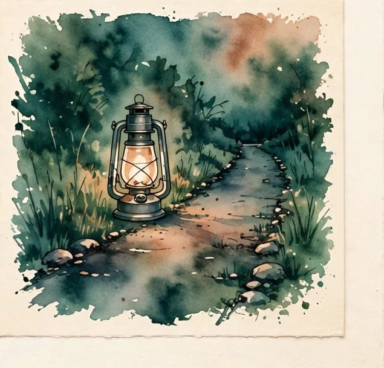
A lantern standing on a night road, lit for whoever passes.
On a night road outside the house there stands a lantern, ordinary in every part. Its glass is common glass, its oil common oil, its flame the same flame that burns in a thousand other lamps. And yet the keeper lists it in the register as singular, because of where it stands and when it was lit and whose road it lights. This is the quiet doctrine of the whole cabinet, stated as plainly as the keeper can state it. No single ingredient in a life is unique. The combination is. The road, the hour, and the traveller meet only once in exactly this arrangement.
Consider any trait a person might claim as his distinction, and the cabinet can find it in another drawer within the hour. The same birthplace, the same trade, the same loss, the same gift for music, the same scar in the same place. Each fact, taken alone, is shared. But lay the facts in their lived order, the street before the leaving, the leaving before the first work, the work before the kindness that changed it, and the sequence belongs to one person only. A recipe is not original because its ingredients are rare. It is original because no other kitchen combined them in this order, at this heat, for these years.
This is why the house issues no certificates and keeps no ranking of its drawers. If the combination is the singular thing, then singularity is not a prize a few lives win while others wait outside. It is the ordinary condition of every life that has been lived in sequence, which is to say every life at all. The lantern on the road makes no claim about its flame. It simply stands where it was placed, burning in its one arrangement of glass and oil and darkness. The keeper passes it on his evening round, and asks for nothing more from it than that.
36Your History Is Not a Template
On the One-of-One Desk there lies a printed form with neat empty boxes, the kind that expects a life to fit its categories in the correct order. School, then work, then the recognised milestones, each with a date and a stamp. The keeper keeps the form as a curiosity, not as an instrument. Too many entries in his register refused its boxes entirely. Lives that began their real work at fifty. Lives that studied after they had already mastered a trade. Lives interrupted, resumed, rerouted by war, by love, by obligation, by a letter arriving twenty years late.
A template is useful for making copies, and the cabinet contains no copies. That is the whole difficulty, and also the whole comfort. A history that followed the form exactly would tell very little about the person who lived it, because the form was written before he arrived. What makes the register worth keeping is the opposite material: the detour that became the main road, the year that looks empty in the boxes and was full in the living, the skill learned sideways from an uncle instead of properly from a school. The singular entries are precisely the ones the form has no column for.
None of this means a life should refuse every pattern on principle. Patterns are paths worn by earlier feet, and some of them lead somewhere worth going. The keeper only notes, in his steady hand, that a pattern is a tool and not a verdict. When a history departs from the template, the departure is not an error to be corrected in the margin. It is information, recorded like everything else in the house. The form stays on the desk, blank and patient, while the register beside it grows thicker, page by unrepeatable page, in ordinary handwriting.
37Quirks and Corners
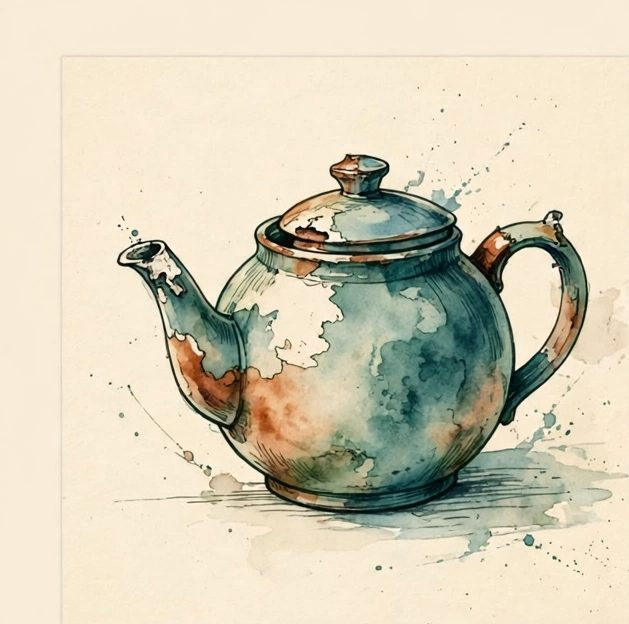
A teapot with a chipped spout, still in daily use.
Hall IV of the cabinet begins, as the keeper likes beginnings, with something slightly damaged. A teapot with a chipped spout stands on its shelf among the singular things, and it pours, if anything, more carefully than a perfect pot would. This hall keeps the quirks and corners of a life, the small deviations that a tidier house might apologise for. A way of laughing too loudly at quiet jokes. A route walked daily that is not the shortest route. A word mispronounced for forty years and defended, by now, as family property.
The doctrine of this hall is plain, and the keeper states it to every visitor who winces at his own inventory. Quirks are data, not defects. A quirk records where a life rubbed against the world and took a particular shape from the contact, the way the chip records the exact afternoon the pot met the edge of the sink. To file the chip off would not improve the teapot. It would only erase the evidence. In the register, quirks are therefore entered without correction and without commentary, in the same hand as the achievements, because in the house's accounting they are the same kind of fact.
Corners belong in this hall too, the unlit angles of a person that are never arranged for guests. They are not hidden out of shame. They are simply not the front room. The keeper, who knows every corner of the house he keeps, does not drag furniture into them to prove they are respectable. He lets the teapot stand chipped on its shelf, pouring carefully, in daily use. A singular thing was never required to be a flawless thing. It was only ever required to be itself, completely, and to go on being of use.
38The Way You Make Tea
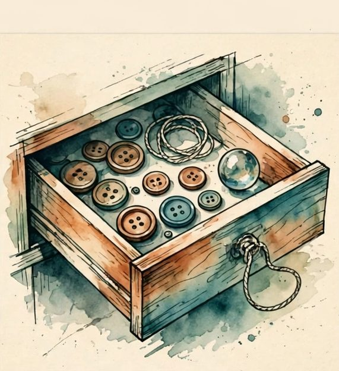
An open drawer of odd small things, kept without order or apology.
Among the drawers of the cabinet there is one that visitors remember longest, because it contains almost nothing of value and everything of interest. A button from a coat long gone. A ticket stub in a language nobody in the house reads anymore. A key that fits no known lock, kept anyway. A stone with a stripe. This is the drawer the keeper opens when he wants to explain how a person actually makes tea, which is to say, how a person does anything at all when nobody has prescribed the method and nobody is watching the result.
For there is an official way to make tea, printed on the box, and there is the way it is made in one particular kitchen by one particular person. The water is boiled past the point, or stopped before it. The leaves are warmed first, or never. The cup is the same cup, chipped in sympathy with the pot in the hall below, and the standing while it steeps is done at the window, in a specific silence. None of these choices was decided. They accumulated, the way the drawer's contents accumulated, one preference at a time, until the accumulation became recognisably a signature that its owner never signed.
Another person, following the printed instructions exactly, would produce a correct cup and an anonymous one. The singular cup is singular precisely because of its small disobediences, each one too minor to defend and too consistent to be accident. The keeper does not rank the teas that pass through his house, and the register records no scores. He only notes the method beside the name, drawer beside drawer, because in this house the way a thing is done daily is as much a part of the thing as what is done. The drawer of odd small things closes last, and hardest, being full.
39Small Rituals, Strictly Your Own
Every life in the register keeps a few small rituals that belong to no calendar and no institution. Lighting a candle on an ordinary Tuesday because the light is kind. Reading the last page of a letter first. Touching the doorframe, once, on leaving a house that mattered. Saying a name aloud on a certain date that the rest of the world has let pass quietly. The cabinet gives these observances a narrow shelf of their own, low and unlabelled, because they were never designed to be seen, catalogued, or understood by anyone except the person who performs them.
A ritual of this kind does no visible work, and that is the source of a certain embarrassment its keeper sometimes feels, explaining it badly and then wishing he had not tried. But the house understands the matter better. The ritual is a stitch, small and regular, holding two parts of a life together across time. The boy who was promised something and the man who remembers the promise are joined, once a year, by a candle or a name spoken aloud. Remove the stitch and nothing collapses at once. The separation happens slowly, which is the only way separations of that kind ever happen.
So the keeper records these observances without asking what they mean, because in his experience the meaning lives inside the repetition and nowhere else. Strictly your own means exactly that: the ritual cannot be borrowed, improved, or performed on another's behalf, and it needs no witness to be complete. The shelf stays narrow and unlabelled. The candle stub is replaced when it burns down, without ceremony, by the only hand authorised to replace it. In a house built to honour singular things, these small kept appointments may be the most singular things of all, because nobody else was ever invited.
40The Song You Ruin Happily
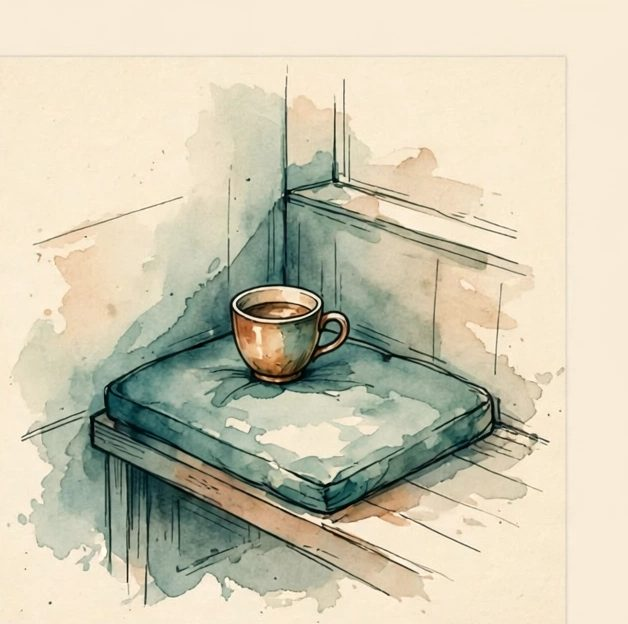
A corner seat in an empty café, one cup, still warm.
In the corner of a café that the keeper sometimes visits there is a seat nobody else chooses, too near the door in winter and too far from the window in summer, and at that table a song is occasionally ruined, happily and completely. It is a song the singer half remembers, with words in slightly the wrong order and a melody that rises where the original politely descends. He sings it under his breath, to nobody, over one cup of coffee gone pleasantly lukewarm. If the true version were played from a speaker, he would listen with respect and prefer, privately, his own.
To ruin a song happily is a small and exact science. It requires affection without accuracy, the way a family recipe drifts across generations until the drift itself becomes the dish. A stranger's song, learned perfectly, remains a stranger's song. The same song misremembered for thirty years, fitted to old summers and old streets, worn smooth at the places where the singer's own life pressed hardest against it, has quietly changed ownership. The cabinet keeps a drawer for such acquisitions. Nothing in it was stolen and nothing in it was bought. Everything in it was carried long enough to become, in the carrying, one's own.
The café empties, the cup is finished, and the song stops in the middle of a line because its singer has arrived, contentedly, at the end of his errand. The keeper, recording the scene later at the One-of-One Desk, enters it without embarrassment among the hall's serious holdings. A life declares its singularity in large ways rarely, and in small ways constantly: in a seasoned soup, a mispronounced word, a ritual kept alone, a beloved song sung wrong with complete satisfaction. The register closes for the evening. The corner seat waits, unchosen by everyone else, exactly as it should.
41Tastes Nobody Can Talk You Out Of
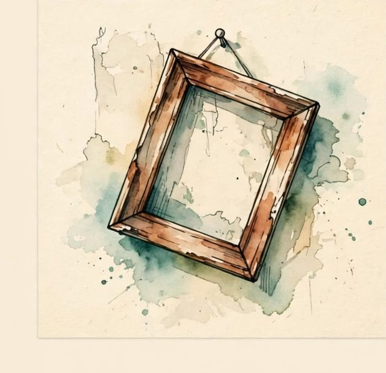
A tin of tea too bitter for every visitor but one.
In the cabinet's shallowest drawer there is a tin of tea so bitter that visitors, offered it once, decline ever after with unusual speed. The keeper notes this without embarrassment. The tea stays. Some tastes are like that: they survive every argument brought against them, every raised eyebrow at the table, every well-meant recommendation of something more reasonable. A taste nobody can talk you out of is not stubbornness. It is a small, settled fact of the register, entered early and never appealed. The drawer holds it the way a drawer holds anything: without comment, because it belongs there.
Other people's tastes can be explained, and often are — by region, by upbringing, by the decade of one's childhood. But underneath the explanations something remains that no explanation reaches: the preference itself, sitting in the mouth or the ear like a stone in a shoe that only its owner cannot feel. A person can be argued out of an opinion before supper. A taste is harder to evict. It was not adopted by reasoning, so reasoning cannot retire it. It arrived the way weather arrives in a valley, and it will leave, if it leaves, the same way.
The house keeps no league table of tastes, and the keeper pours the bitter tea for exactly one cup at a time. What the drawer teaches is modest: your unarguable likings are part of the combination, entered in their order, and they need no defense at the desk. A person who apologizes for every preference spends the apology budget of a lifetime on weather. Keep the tea. Let the eyebrow rise and fall. In the register of singular things, a taste that has survived every attempt to talk it away is not a flaw in the entry. It is one of the entry's most reliable lines.
42The Drawer Only You Understand
On the landing wall hangs a picture frame a full finger's width out of true, and every guest who climbs the stairs feels the small itch to straighten it. The keeper does not straighten it. Seen from the desk below, at the angle where the keeper actually lives, the frame hangs level with the old house's settled floor, and the floor is what the picture answers to. The drawer only you understand is like that frame. From the corridor it looks like disorder. From inside the life, every object in it lies exactly where the hand expects to find it.
Every cabinet has one drawer that resists the house system: string beside ticket stubs, a key that opens nothing current, a receipt kept for the handwriting on its back. Another person tidying would ruin it in an afternoon, sorting by kind what was arranged by memory. The order in such a drawer is not visible because it is not spatial. It is chronological, sentimental, associative — a map of one mind's shortcuts. The keeper, who respects all private cartography, labels the drawer with its owner's name and asks no questions. Understanding, in this house, is not a requirement for keeping.
There is a quiet dignity in a system of one. It asks no converts and files no reports. If your arrangements puzzle the household, the house suggests patience rather than reform: a drawer understood by a single person is still understood, and that is the whole of its duty. Not everything singular must be translated to be legitimate. The frame stays crooked to the stairs and straight to the desk, and both reports are honest. What matters is which floor you stand on when you look. The keeper stands on yours, briefly, whenever you open the drawer — and finds, each time, that it makes sense.
43Superstitions, Harmless and Personal
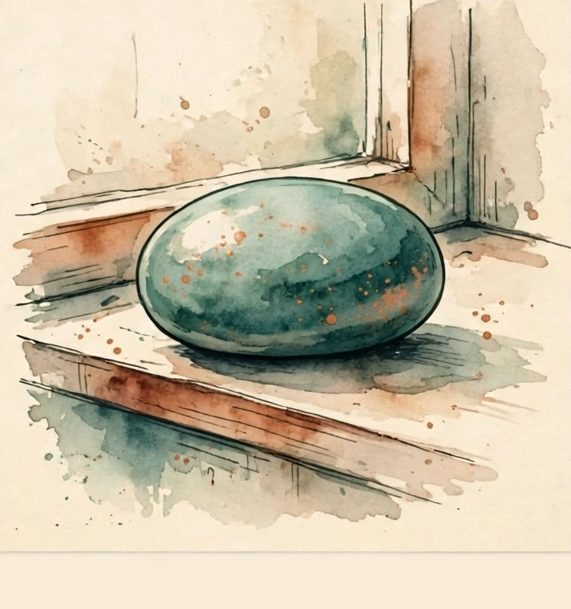
A coin turned face-up in a pocket, for luck and for no other reason.
In the third drawer down there is a coin worn smooth, carried for forty years by a man who never once claimed it worked. He turned it face-up in his pocket each morning, the way another man checks a latch. The keeper catalogued it without a smile. Harmless superstitions are the house's smallest citizens: the spoon tapped twice, the step never taken on a crack, the sentence said under the breath at a threshold. Nobody builds doctrine on them. They are private weather rituals, kept because the hand likes them, the way a path across a lawn is kept because feet prefer it.
What makes a superstition personal is that it cannot be transferred. Inherited ones — the horseshoe, the knocking on wood — belong to everyone and therefore to no one in particular. The singular ones are handmade: the exact pen for signing, the left shoe first on difficult days, the number counted to before a door is opened. They are assembled from one life's accidents, a small private liturgy with a congregation of one. The keeper has observed that people defend them only when mocked, and mockery, in this house, is considered poor registering. A ritual that harms nobody and steadies somebody has earned its drawer space.
The register does not ask whether the coin brought luck. That question belongs to a different kind of house. This one asks only whether the carrying was part of the man's way of meeting the morning — and it was, daily, for forty years, which makes it part of the combination as surely as his signature. Singularity is often this small. Not a banner, not a doctrine: a coin turned face-up in the dark of a pocket, by one hand, in one order, unrepeated by anyone else alive. The drawer closes on it gently. Some things are kept not because they work, but because they are his.
44The Joke Only You Laugh At
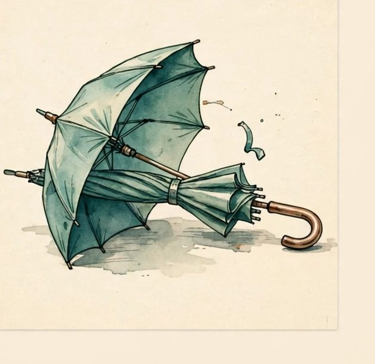
A smooth stone on the windowsill, kept for the luck of it.
On the windowsill above the desk sits a smooth grey stone, brought in years ago by a visitor who, setting it down, said something the keeper can no longer reconstruct — and laughed, alone, for a full minute. The stone stayed because the laughter stayed in the room's memory. Everyone knows its cousin: the joke only you laugh at. It is told at the table, lands in silence, and yet the teller's shoulders shake anyway, helpless, every time, for years. The humour is not failing. It is calibrated to an audience of one, and that audience is delighted.
A private joke is usually a compressed history. Inside it sits some afternoon, some absurdity witnessed alone, some resemblance nobody else was present to register. Told baldly, it explains nothing; the laughter is the interest paid on a memory only the teller holds in full. This is why the joke survives its failures at the table. It was never really addressed to the table. The keeper, when a visitor laughs alone in the reading corner, does not ask for the joke. Some entries in the register are complete without being legible to the staff. The laugh itself is the record.
The house keeps the stone on the sill as a reminder that singularity is frequently inaudible to others — a frequency one ear is tuned to. Your solitary laughter is data: it marks the exact shape of what you have seen and how your mind files it. No two people laugh at precisely the same world. So the joke stays untold at the desk, or told and unrewarded, and either way it keeps its place in the combination. The keeper straightens the stone when he dusts. He has never once been tempted to throw it out. A thing that has made one person laugh for years is, by the register's arithmetic, a treasure.
45Collections of Unlikely Things
By the door stands an umbrella with one bent rib, kept for a decade among straighter, sounder umbrellas that visitors are welcome to borrow. That one is never lent. It belongs to the keeper's private collection of unlikely things, which the cabinet holds in its widest drawer: a chipped cup from a demolished café, three keys to forgotten doors, a timetable for a railway that no longer runs. None of it is valuable. All of it is irreplaceable, which the register treats as a different and more interesting property. A collection of unlikely things is a biography told in objects nobody else thought to keep.
Every collector of the unlikely begins by accident. An object survives a clear-out because the hand hesitates, and the hesitation, repeated over years, becomes a policy. What gathers is never a category the world recognizes — not stamps, not coins, but the bent, the superseded, the almost-discarded, rescued by one person's specific attention. Another collector, given the same lifetime of objects, would have saved an entirely different wreckage. That is the point the house underlines. The collection is the person, externalized. You could read the drawer instead of the diary and lose very little in the translation.
The keeper is sometimes asked why the umbrella is not simply repaired or replaced, and the question amuses the house. Replace it with what? A working umbrella is a common thing, available anywhere. This one, with its bent rib and its decade of thresholds, exists exactly once. Collections of unlikely things teach the doctrine without a lecture: value and rarity are not the same, and singularity is often just survival plus one person's loyalty. The drawer of rescued objects closes softly at night. Nothing in it could be sold. Everything in it could be recognized, at a glance, by the one who saved it. That recognition is the whole collection.
The One-of-One Desk
One desk receives all correspondence for this cabinet — questions, corrections, greetings, and word of any singular thing of yours that the world has lately tried to file under ordinary. It is read in the order it arrives.
46The Corner Seat You Always Choose
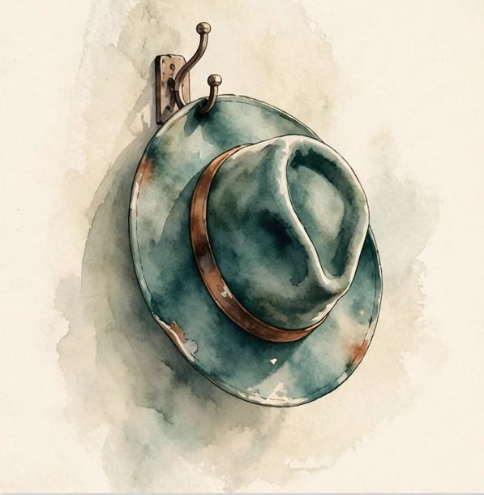
The same corner seat, taken without looking, in every café in town.
Every regular has a seat, and the corner seat regulars are the most consistent citizens of any café in the world. They enter, they do not survey the room, they walk to the corner as water finds a course. The keeper, who takes the corner chair of the reading room though three better chairs stand empty, understands the mechanism exactly. A chosen seat is not about comfort in the first instance. It is about the angle: what the back is protected from, what the eye commands, where the door sits in the field of view. The body files these preferences long before the mind is consulted.
Psychologists of cafés — every establishment has one, usually at the counter — will tell you the corner seat is strategy: the wall behind, the room ahead, the exit in sight. Perhaps. But the register notes something plainer. The same person chooses the same seat in rooms they have never entered, in cities whose language they do not speak, with the unhesitating accuracy of a bird returning to a wire. The preference outruns the reasons offered for it. It belongs to the body's own archive of ease, compiled in childhood kitchens and schoolrooms, and it is carried everywhere like a small portable geography of safety.
The house draws its usual conclusion: a habit this loyal deserves entry in the register, not correction. The corner you always choose is one of the quiet coordinates of the combination — minor, daily, and entirely yours. Others know you by it; the café saves it without being asked, which is how singularity announces itself in practice: not as spectacle, but as a chair that waits. When the keeper travels, he takes the corner seat of whatever room receives him, and feels, for a moment, the drawer-slide of a familiar order. Home, the register notes, is partly a matter of where your back prefers to be.
47Quirks Are Data, Not Defects
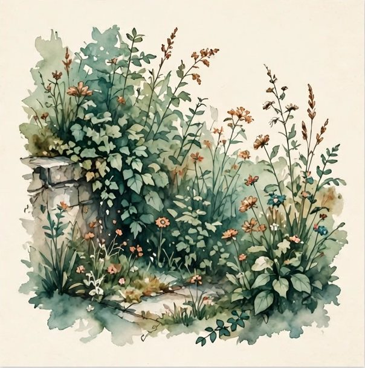
A soft hat on its hook, shaped by years of one head.
On its hook by the cabinet hangs a soft hat so thoroughly shaped by its owner that it would fit no other head on earth. The brim has taken his exact tilt. The crown holds the memory of his grip, lifted always at the same two points. New, it was an ordinary hat, one of hundreds on a shelf. A decade of one head has made it singular — manufactured, in the end, not by the maker but by the wearing. The keeper shows it to visitors who arrive apologizing for their quirks. Most apologies, he has found, are addressed to data that was misfiled as damage.
A quirk is a fact about a person that does not match the average, and the house insists on the plainness of that definition. It is data: this is how this one is made, this is the angle of the brim. Data is not praised and it is not excused; it is recorded, and then, if it is useful, consulted. The crackle in a voice, the hatred of whistling, the need to finish a row before stopping — entered honestly, these become working knowledge. Misfiled as defects, they become a lifelong clerical error, paid for in apologies the register never requested.
The hat also carries the house's gentler arithmetic: time plus singularity equals shape. Nothing about the hat was defective at purchase and nothing became defective; it simply became his, in the way everything faithfully kept becomes particular. So with the quirks. Worn openly, they take the shape of a life and begin to fit it. Hidden and apologized for, they chafe. The keeper enters each visitor's oddities in the register in the same neutral hand he uses for names and dates, and the neutrality itself is the doctrine. In this cabinet, your quirks are not the flaw in the entry. They are handwriting. They are how the register knows the entry is yours.
48In Defense of the Odd Habit
Behind the house there is a garden corner gone pleasantly wild, where the keeper's predecessor let the planting go its own way: self-seeded flowers in unplanned colors, a path the grass is slowly repossessing, bees in undisputed tenure. Visitors with tidy gardens study it the way one studies a sentence in a language half-known. Every garden keeps one citizen like this corner — every person, the house would say, keeps one habit like it: the odd, unproductive, slightly indefensible practice that survives every resolution to become more sensible, and flares up again each spring of the life.
In defense of the odd habit, the house offers first the evidence of function quietly served. The wild corner feeds the bees the tidy beds cannot feed. The odd habit — the walk at midnight, the newspaper read back to front, the song sung to the kettle — often performs some small true service the sensible schedule performs nowhere: it discharges a pressure, marks a transition, keeps a private appointment with the self. A habit does not need its function proven at the desk to keep its place. It needs only to be harmless and honestly native. Much that is called eccentricity is maintenance whose purpose has been forgotten by everyone except the habit itself.
So the keeper defends the corner against every suggestion of clearing, and the register defends the habit with the same entry: retained, by long service, without explanation. Your odd habit is part of the combination's order — placed where it is in your day for reasons your life knows even if your tongue cannot file the report. The house's one rule stands guard over the defense: comparison is the error. Measured against tidier gardens, the corner is a failure. Measured by what it feeds, it is a success of a rarer kind. Let it go pleasantly wild. The bees, at least, have never filed a complaint.
49What Only You Notice
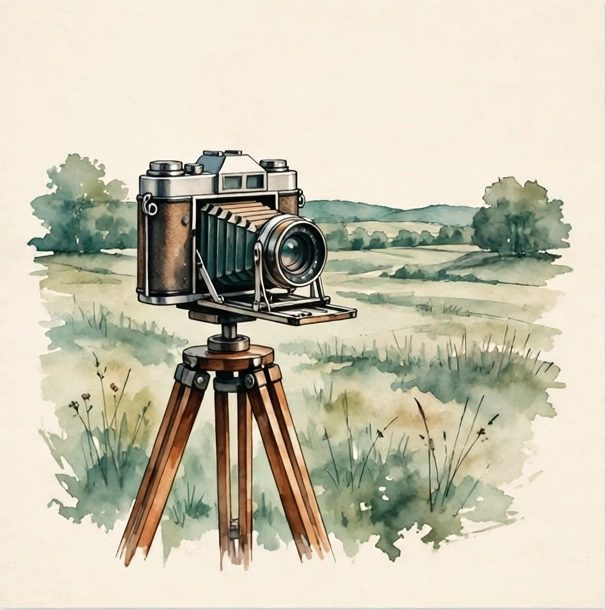
A vintage camera on a tripod, facing a quiet field.
In the hall of noticing, the centerpiece is a vintage camera on a tripod, aimed at a quiet field where, to most eyes, nothing is happening. The keeper chose the exhibit carefully. Leave the camera there a day and ask a hundred passersby what it is pointed at, and you will receive a hundred honest answers: the fence, the far tree, nothing much, the light if they are feeling generous. Each answer is accurate and each is different, because the question was never really about the field. It was about the noticer. What only you notice is the house's plain name for the most private room in a person.
Attention is not a window everyone opens onto the same view. It is more like handwriting: formed early, shaped by everything seen since, and unmistakable once you learn to read it. One person notices exits, another notices hands. One hears the wrong note in the choir; another sees, instantly, which picture in a strange house is hung with love and which with duty. None of this is chosen the way a coat is chosen. It accumulates, sighting by sighting, into a signature no forger could manage, because the forger would have to have lived the same life of looking.
The register keeps a page for each visitor's noticings, and the pages never resemble one another, though the world they were taken from is the same world. This is the hall's whole argument set out in objects: singularity is not only in what a person is but in what a person sees — perhaps, the keeper thinks, it is mostly there. The camera faces the quiet field still. The field is not empty. It is full of everything a hundred people would walk past, and a few things one person would stop for. Being that person, in that exact distribution of stopping, is a thing no one else is.
50Attention Is a Fingerprint
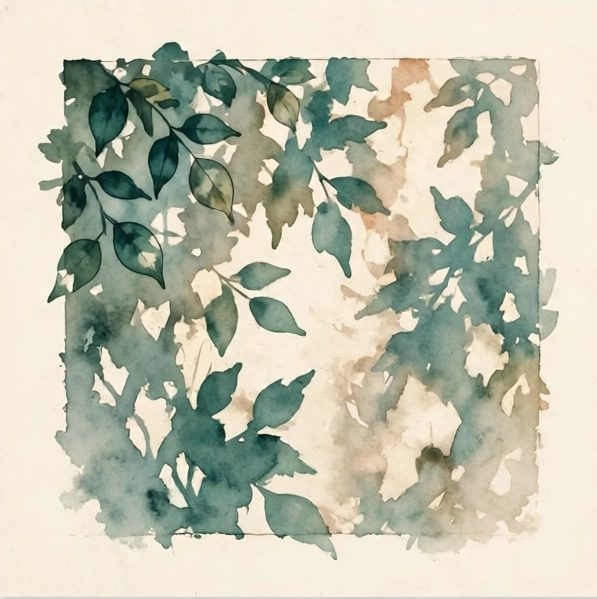
A map of light through leaves, patterned on a wall.
Late in the day, sunlight comes through the leaves outside the west window and patterns the reading-room wall with a shifting map of bright islands. The keeper has watched visitors watch it. Some see only decoration. One saw, instantly and aloud, the shape of the coastline where she grew up, and stood a long time. Attention leaves marks like that — patterned, particular, impossible to transfer. If the house needed a coat of arms, the keeper says, it would take this: light through leaves, falling on one wall, read differently by every person who has ever sat in the chair beneath it.
A fingerprint is the usual emblem of uniqueness, and the house finds the metaphor too passive. A fingerprint is left behind, the same at twenty and at eighty, on everything touched. Attention is a fingerprint in motion: it develops, it trains, it can be deepened by practice and dulled by haste, yet its pattern remains recognizably one person's. What you cannot help seeing — the strained smile, the mended cuff, the bird before the window has fully registered as a window — is as identifying as any whorl of skin. Handed a stranger's day of noticings, you would not mistake it for your own. The signature would be wrong in every line.
This is why the register guards the noticings as carefully as the names. A person's attention is their first draft of the world, revised daily, authored alone. The keeper files the wall's bright map under no one's name, since it changes hourly, but he files each visitor's reading of it, and the readings are pure singularity: evidence that the same light, offered impartially to all, becomes information only in the singular mind. Take the doctrine with you into any crowd. You are not the only one seeing. You are the only one seeing exactly that. The wall keeps the light. The chair beneath it keeps the difference.
51The Photograph Only You Would Take
At the overlook above the valley, a party of walkers faced the famous view and lifted their cameras in one motion, like a flock turning. One walker photographed the doorway of the little shelter behind them: its worn step, the initials cut into the lintel by hands long gone, a coat left hanging in the warm dark. The others laughed kindly when the prints were shared. But hers is the photograph people still ask about, because it recorded what the visit actually contained — the waiting, the shelter, the human scale of the day — while the famous view, photographed identically by thousands, belonged to no one.
The photograph only you would take is attention made permanent, and therefore the most testable evidence this hall owns. Give a hundred people the same hour in the same place and the contact sheets will sort them as reliably as signatures. One photographs faces, one records only hands and tools, one cannot pass a closed door or a laden table without a frame. Nothing about this is talent, though talent may ride along. It is the shape of a particular curiosity, the record of what one person's looking has been trained by a whole life to love first and fastest.
The keeper files such photographs in the register without captions, because the image is the caption. His doctrine for the drawer is plain: do not correct your eye toward the famous view. The pictures you are compelled to take — of doorways, of workbenches, of the backs of things — are the combination showing itself in public, in a form anyone can verify. Long after the overlook prints have blurred into the general album of the world, the doorway remains, dated and signed by attention. Somebody stood there seeing that. Only one somebody. The frame is ordinary; the seeing was singular, and the photograph is its certificate.
52What You Remember of a Room
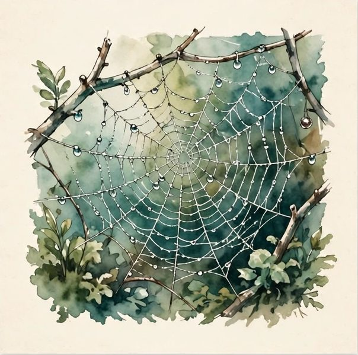
A spiderweb beaded with dew, noticed before breakfast.
Between the gateposts, some mornings, a spider rebuilds her web, and by the time the house is awake it hangs beaded with dew, each drop holding a small inverted world. The keeper passes it daily and reports it differently each time: today the pattern, today the one broken strand, today only the light. Ask two people to describe any room they have both just left and you will hear the same phenomenon indoors. One remembers the books and the argument; the other remembers the cold draught, the chipped cup, and that the host's left hand trembled slightly when pouring. Both were there. Neither is wrong. They were simply in different rooms, assigned by attention.
Memory is not a recording that two people make of one event, keeping identical copies. It is an act of selection performed live, at walking speed, by a mind with a lifetime's instructions about what counts as the point. What you remember of a room is therefore a portrait of the rememberer as much as of the room. Historians of families learn this early: siblings raised in one house produce childhoods that overlap like circles in a diagram — a shared center, and wide private margins. The margins are not errors. They are where each person actually lived, in the room only they were noticing.
The house finds this consoling, and files it so. If your version of the shared past differs from the family's official edition, the difference is not necessarily a defect of recall. It may be the register's most accurate entry: proof of what your attention was doing while history happened. The web between the gateposts lasts an hour and is gone; a hundred mornings of it, differently noticed, make a climate of seeing no one else has lived inside. Keep your margins. Somewhere in them — the chipped cup, the trembling hand, the broken strand — is the exact signature of the one who was there, being you.
53Two People at the Same Party
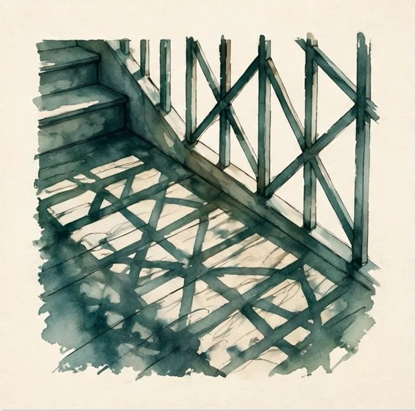
Shadows of a staircase railing, striping the floor at noon.
At noon the sun stands high enough to throw the staircase railing's shadow across the hall floor in long stripes, and for an hour the house walks on light barred like a page. The keeper thinks of it whenever two guests describe the same party at his desk. They agree on the address and the hour and diverge on everything else. One attended a party of music and an old friend's news; the other attended a party of one difficult conversation by the window and the long wait for a taxi in the cold. The invitations were identical. The parties were not.
This is not a failure of the party, or of either guest. It is the ordinary arithmetic of attention: a room contains more events than any one person can attend, so each attends a selection, and the selection is authored by everything the attender brought through the door — their hopes for the evening, their sore feet, their history with the host, the one face they were watching for. Two people at the same party are two editors publishing different papers from the same city. The house keeps both editions in the register, side by side, and declines to merge them into a single official account.
The doctrine has a practical mercy. Much needless quarrelling begins when two editions of one evening are mistaken for a fact and a lie. The keeper's practice is to ask, of any disputed event, not which account is true but what each account reveals about its teller's attention. The answer is always singular. You will leave tonight's gathering carrying a version no one else carries — edited by your hopes, striped by your particular light. It is not the party. It is your party, and among all the guests, only one person attended it. The shadows on the floor are the same for everyone. The stripes each walker notices are not.
54The Details You Collect Without Meaning To
Empty the keeper's coat at evening and the pockets give up their small archaeology: a bus ticket from a route he does not use, a button of unusual color, a folded notice copied from a board because one line of it pleased him. None of it was collected. All of it was noticed, and noticing, in his economy, is half of keeping. Everyone carries such a pocket, physical or mental: the details gathered without meaning to — the names of strangers' dogs, the way a certain colleague signs off a call, every lyric of a song last heard in a decade best forgotten.
These unplanned archives are among the purest evidence the cabinet holds, precisely because no one curated them. A deliberate collection shows what a person values; an accidental one shows how a person is built. The mind kept what it kept for its own reasons, filing by resemblance, by charm, by some private resonance no committee approved. Read another person's hoard of stray details and you are reading the floor plan of their attention: which windows it opens, which it has never found. The details differ. The gathering instinct is universal. The combination — this exact miscellany, in this exact head — occurs once.
The house suggests, now and then, an inventory, not for improvement but for recognition. Spread the pocket's contents on the desk and look at what your noticing has been doing all these years without instructions. There is usually a pattern, and the pattern is usually tender: proof that some part of you has been keeping faithful minutes of the world in its own shorthand, all along. The keeper returns his button and his ticket to the coat, unfiled and unashamed. Not every singular thing needs a drawer. Some travel in the pocket, gathering quietly, and their owner is the only registrar they will ever need.
55Noticing Is a Craft
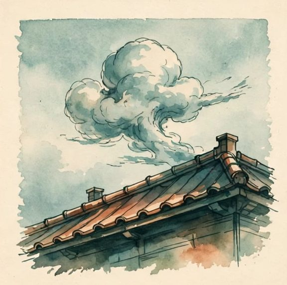
One oddly shaped cloud, holding its pose over the roofline.
Over the roofline this morning hung one oddly shaped cloud, long and low, holding a pose the other clouds declined to attempt. The keeper pointed it out to a visitor, who glanced, agreed that it was a cloud, and returned to his letter. The keeper stood a while longer. Noticing, like any craft, has its apprentices and its journeymen, and the difference between them is not eyesight. It is stay. The apprentice glances and names: cloud, tree, crowd. The journeyman remains one breath longer, and in that breath the thing itself arrives — its particular shape, its departure from the type, its brief unrepeatable offer.
A craft improves by the same law everywhere: attention, repeated, becomes finer without becoming slower. The cabinet-maker's grandson sees at a glance the joint his grandfather would have needed a thumb to find. So the trained noticer sees the replaced tile in the mosaic, hears the one instrument entering late, catches the sentence in the letter where the writer's true feeling changed key. None of this is a gift distributed at birth like eye color. It is built, noticing by noticing, the way a path is built. And like a path, it becomes more itself the more it is walked: your craft of seeing grows more singular, not less, with practice.
The house keeps this room hopeful on purpose. If noticing is a craft, then your way of seeing is not a fixed endowment to be measured against sharper eyes; it is a workshop that stays open. Comparison — the house's one named error — has no standing here: the journeyman is not a better person than the apprentice, only a later one. Stay the extra breath. Let the cloud hold its pose for you. What you notice tomorrow will be finer than what you noticed today, and it will be yours in a way that compounds: a life's practice of attention is the longest entry in the register, and it is written by looking.
56The Questions You Always Ask
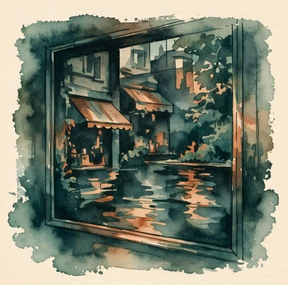
Reflections in a dark shop window, the street doubled and dimmed.
Passing a dark shop window at dusk, you catch the street doubled: the lamps, the walkers, your own figure among them, all dimmed into one layered reflection. It is the hour when questions surface the same way — unbidden, in passing, wearing familiar shapes. The keeper keeps a page in the register for each visitor's recurring questions, and he considers it among the most identifying pages he files. Not the questions a person asks aloud for information. The questions they always ask: of every city, every host, every new acquaintance, every book's first page. The same three or four, in the same order, for a lifetime.
One person asks, always, how a thing is made. Another asks what it cost and who paid. Another — the keeper writes this one often — asks first how the people are: who is well, who is grieving, where the children went. There is the visitor who asks of every house who lived there before, and the one who asks of every plan what could go wrong. These questions are not strategies. They rose early, from the household's own preoccupations, and they have been quietly steering a life's worth of conversations since. A person's questions reveal their attention the way a key reveals its lock: by the shape of what it opens.
So the register's advice is simply to listen for your own recurrence. The questions you always ask are a small set of instruments you carry from room to room, tuning every place to the same few honest frequencies. Others will hear the world at other settings. Neither is the correct broadcast. But the set is yours, worn smooth by use, and it has decided, more than any opinion you hold, what your life has been able to find out. The window darkens; the reflection thins; the questions walk on beside you, asking themselves. Attend to them kindly. They are the form your singularity takes when it speaks first.
57What Catches Your Eye in a Bookshop
In a bookshop there is a moment before choosing begins, when the hand is already moving. The keeper, who watches browsers the way other men watch weather, swears he can read a person at that moment more reliably than from the book finally bought. One browser goes to the atlases, always, in every shop in every country. One makes for the biographies of the obscure. One seeks the shelf of local disasters; one, indefatigably, the books about books. The bought book may be a gift, a duty, a whim. The first reach is a confession, unedited and entirely reliable.
What catches your eye in a bookshop is your attention with its guard down, surrounded by ten thousand invitations and free to choose. It chooses, overwhelmingly, the thing it has been choosing all your life: the evidence of your standing curiosities, the subjects your mind returns to the way a tongue returns to a sore tooth — not from duty, but from a kind of gravitational love. New interests announce themselves exactly here, quietly, when the hand begins drifting toward a shelf it never used to visit. The register records those drifts with respect. They are often the first entry in a new chapter of the combination.
The keeper's own first reach, for the record, is toward the books of trades and workshops, the manuals of other people's competence — a taste this whole house rather proves. Yours is written in the same honest ink wherever books are sold. Do not correct it toward respectability. A browser who always leaves with the approved volume and never the reached-for one is maintaining two libraries, one for show. The reached-for shelf at home — cookery beside shipwrecks, saints beside railway timetables — is the combination again, visible to any guest who knows how to read a room. Let it stand. It is the truest catalogue of you that exists in print.
58Your Attention Has a Hometown
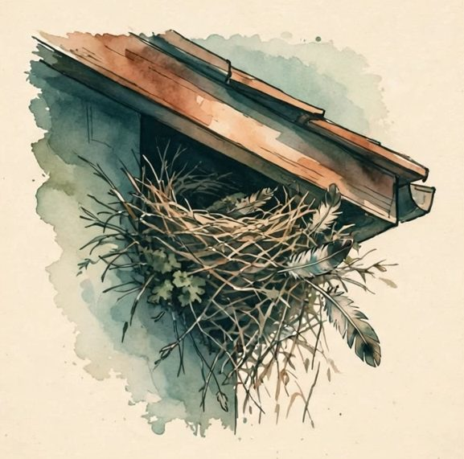
A bird's nest tucked under the eave, built from what was near.
Under the eave of the house, tucked where the rain cannot argue with it, a bird has built her nest from what was near: string from the garden, a strip of blue plastic, three feathers not her own, and one bright twist of wire. No two nests on the street match, though the swallows all read the same instructions in their blood. Each is the local materials, assembled by one bird's judgment of distance and worth. The keeper points the nest out to visitors who believe their attention came from nowhere. It came, he says, the way the nest came: from what was near, in the years when it was being built.
Your attention has a hometown. It was formed in a particular light, among particular voices, watching particular people notice particular things. A childhood where the weather was read off the sea teaches one set of eyes; a childhood among ledgers and harvests teaches another. The hometown is not a limit — birds migrate, and so does attention — but it is a foundation, and its materials keep appearing in the structure all your life: the things you notice first in any new place are often the things your first place taught you to check. The register calls this the geology of seeing, and finds it in every file.
There is no ranking of hometowns in this house, and comparison, its one named error, is refused at the door of this room especially. The sea-child's eyes and the ledger-child's eyes are not better and worse; they are built of different near materials, and the world needs both reports. Know your nest's composition and you know something true about every observation you will ever make. The swallows return each year to the same eave and rebuild from the street's new leavings. Attention does the same: loyal to its first materials, and quietly gathering more. What it builds, in the end, is the only vantage point from which you have ever seen anything.
59Teaching Someone Else to See It
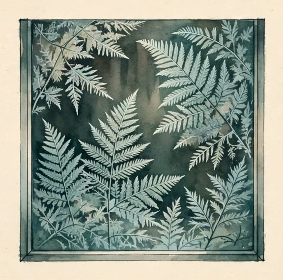
Frost ferns on a windowpane, gone by nine o'clock.
On cold mornings the windowpane grows frost ferns — branching, intricate, each pane a different garden — and by nine o'clock the sun has taken them all. A visitor once asked the keeper to describe the pattern on the north pane, and found, to her surprise, that she could not receive his description as a substitute for having seen it. She had to be brought to the window, in the cold, at the hour. Teaching someone else to see it is the final labor of noticing: the attempt to lend your eyes, knowing the loan can never be perfected, and that the attempt itself changes both the lender and the borrower.
The method, insofar as the house has learned one, is pointing and patience. You cannot hand over the seeing; you can only stand the other person in the right place, at the right hour, and name one thing at a time — the strand's break, the fern's branching, the note entering late — until their own attention catches the thread. Some never catch it, and the house forbids contempt for them: their panes grow different ferns. But when the catch happens, it is unmistakable. The other face changes. A private world has acquired a second citizen, and both citizens are enlarged, because now the seeing can be discussed, corrected, kept.
What passes between them in that moment is the closest thing to sharing a singularity that exists. Not the singularity itself — the frost you saw remains the frost you saw, dated and unrepeatable — but a bridge built to its edge, across which company can travel. The keeper counts teaching-to-see among the house's highest entries, because it converts the loneliest fact in the register into a form of generosity. Your attention is yours alone. What it has noticed, patiently pointed out, can become a lamp in other rooms. The pane clears by nine. What was taught at eight remains, in two minds now, for good.
60The Room as You Saw It
At supper the keeper described this hall's reading room to a guest who had left it an hour before — the fire low, the map of leaf-light fading on the wall, the corner chair holding its shape — and the guest laughed and said he had plainly been in another room entirely. His room had contained a draught, a difficult letter, and a clock five minutes fast. Both accounts were filed. The hall of noticing closes where it began: with the room, and the plain discovery that a room is not finished being a room until someone has seen it, and that everyone's seeing completes it differently.
Stand in any familiar room and perform the register's closing exercise: name, silently, the things you would report of it — not the inventory, the report. The three details that would make your description yours. Then imagine the reports of the others who have stood there: the child's, all knees and hiding places; the carpenter's, all joints and levels; the tired mother's, all distances to the chair. The room holds them all without contradiction, the way a chord holds notes. Your report is one true voicing of it, and it could belong to no one else who has ever stood on that floor.
This is why the house keeps the hall of noticing near its heart. A person is not only what is kept in the cabinet; a person is also the cabinet's light — the particular illumination under which the world has been viewed, once, from inside one life. Rooms will forget us. The register will not: it keeps the room as you saw it, entered in your hand. And when the accounts of a place are gathered at last — the draught and the letter, the fire and the leaf-light — the truest record of the room is not any single entry. It is the bundle of them, bound together, each one singular, none complete alone.
The One-of-One Desk
One desk receives all correspondence for this cabinet — questions, corrections, greetings, and word of any singular thing of yours that the world has lately tried to file under ordinary. It is read in the order it arrives.
61The Combination Lock
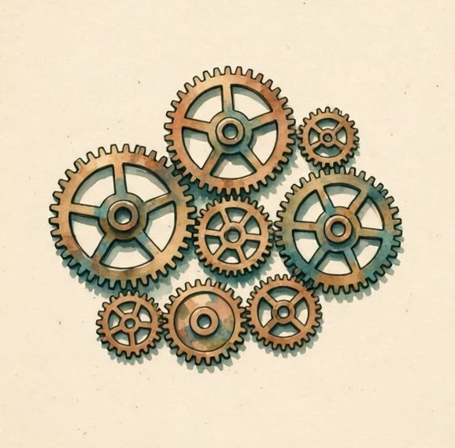
A cluster of unlike brass gears, meshing into one slow motion.
In the cabinet's deepest drawer, wrapped in cloth, lies a cluster of unlike brass gears — different sizes, different tooth-counts, one slightly bent — that nonetheless mesh, and turn, and drive one another in a single slow motion. The keeper keeps it as the emblem of this hall. Ask a locksmith what makes a combination lock singular and he will not point to any wheel in it. Each wheel is a common thing, numbered like every other wheel in the world. The singularity lives in the sequence: which numbers, in which order, opening this one door. A person, the house holds, is built to the same design.
The doctrine is worth stating plainly at the threshold, because the rooms beyond depend on it. You are not a rare trait walking about in search of witnesses. You are a sequence: traits, history, attention, accidents, likings — each one shared with thousands, arranged in an order shared with no one. The lock metaphor is kind, and the house means the kindness precisely. A combination lock is not a prison. It keeps a register private, that is all. Its numbers are not bars; they are the shape of a privacy everyone is entitled to, opening from the inside at its owner's hand.
So this hall does not ask you to find your one remarkable thing, because there is no such thing and the search for it has filled the register with unnecessary grief. It asks you instead to consider the whole turning mechanism: how your common gears mesh, what order they were mounted in, and what only that order can open. The bent gear is included, turning true with the rest. The keeper oils the cluster once a year, not because it is precious metal — it is brass, and common — but because it demonstrates, in silence, the only claim this house ever makes: the combination is the person, and combinations do not repeat.
62No Single Trait Is Rare
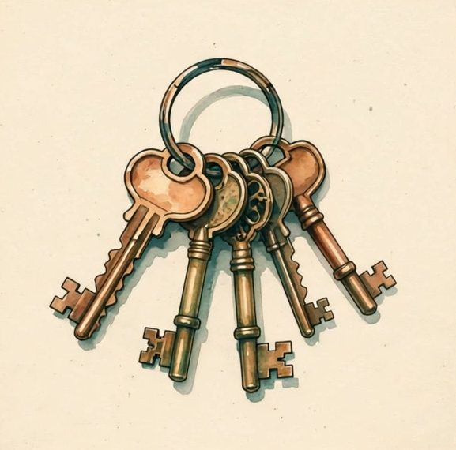
A bunch of very different keys on one ring, each with its own door.
On one ring at the desk hang very different keys: a long church key, a small tin key for a cash box, a modern key with a plastic head, one so old its teeth are worn to suggestions. Strangers to the house sometimes imagine that among ordinary keys there must be one remarkable key that opens the important door. The keeper corrects them with the ring itself. No single trait is rare. Height, humor, stubbornness, a good ear, a bad knee, a gift for soup — distribute any one trait across the town and you will find it by the hundred, worn by strangers who share nothing else with you or with each other.
This is the room where visitors most often feel the doctrine wobble, so the register states it twice. Your kindness is not unique; the town is full of kind people. Your melancholy is not unique; neither is your wit, your wound, your way with pastry. Each is a standard key, cut in every generation, hanging on a thousand rings. If singularity required a rare trait, almost no one would qualify, and the few who did would qualify by accident of birth — a doctrine this house finds both false and cruel. The evidence at the desk contradicts it hourly. Ordinary people file past, every one of them unmistakably themselves, built entirely of common parts.
The ring resolves the paradox the way the register always resolves it: look not at the keys but at the ring. Your kindness, in your order — arriving after your suspicion and before your humor, qualified by your history, aimed by your attention — that arrangement is not hanging anywhere else in the world. Singularity was never a property of the parts. It is a property of the assembly, and every person alive is an assembly that occurred exactly once. The keeper returns the ring to its hook. It jingles, ordinary as weather, and there is not another sound like it in the building.
63A Thousand Ordinary Things, One Order
A thousand ordinary things stand behind every person in the register: the town they are from, the trade they learned, the songs of their decade, the illnesses survived, the jokes inherited, the foods of the house. Read the list of any one life and a stranger could match it, item for item, against a hundred others — same town, same trade, near enough the same songs. What the stranger cannot match is the order. In one life the loss came before the trade and seasoned it; in another the trade came first and paid for the loss's funeral. The events rhyme. The sequence does not, and sequence is where meaning hides.
Order is the quiet author of difference. A cook knows it: the same onions, the same heat, but browned before the liquid or after it, and the soup is two soups. A musician knows it: the same three chords, reordered, and one song is a lament and the other a dance. The register applies the law to lives without decoration. Your traits did not arrive alphabetically. They arrived in a biography — confidence built, then broken, then rebuilt with the break in it; tenderness learned late, after the defenses were already load-bearing. That stratigraphy, layer on layer in their exact order, is the combination's teeth.
So when you take your own inventory and find it dishearteningly common — and the house promises that you will, because it is common, because everything human is — do not stop the audit at the list. Read the order. Read which thing in you speaks first, which arrives as reinforcement, which only appears in winter. That syntax is yours alone, acquired at full price over a whole life, impossible to counterfeit because counterfeiting it would require living the years. The keeper files the lists carelessly; any clerk could copy them. The order he files under seal. It is the part of you that has never occurred before and will not occur again.
64The Recipe with Your Name on It
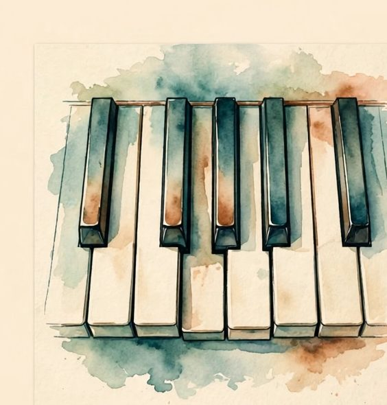
Piano keys with three pressed down, sounding one familiar chord.
In the music corner stands an old piano, and the keeper, demonstrating this room, presses three keys at once: a chord, familiar, slightly mournful, impossible to mistake for any of its notes played alone. The recipe with your name on it — every family keeps the story of one — works identically. Some grandmother's dish, written on a card in her hand, has been attempted by four households of her descendants with the identical ingredients, and it comes out hers in only one kitchen, some years, when it feels like it. The card is accurate. The card is not the recipe. The rest of the recipe is the cook.
A recipe, faithfully examined, is a list of common nouns: flour, salt, heat, time. What carries a name is everything the card cannot hold — the order of the hands, the patience at the one step everyone else hurries, the judgment of when it looks right, learned from standing beside someone who has since left the kitchen entirely. So it is with a person. Your ingredients are the common nouns of a human life. Your name is on the dish because the making — the sequence, the pressure, the timing, the tasting — runs through one pair of hands with one history in them. Imitators can buy everything on the card. They cannot buy the standing-beside.
The house keeps the card and the chord in the same drawer deliberately. Notes are not music; ingredients are not dinner; traits are not a person. The error the register corrects here is the inventory error — believing a self can be read off a list — and its correction is the whole of this hall. Press your three keys separately and the room hears three facts. Press them together, in the order your life mounted them, and the room hears you. The keeper closes the piano lid gently. The chord goes on sounding in the wood a moment after the keys are still, which the house considers the correct image for everything it has been saying.
65Ordinariness Is the Ingredient
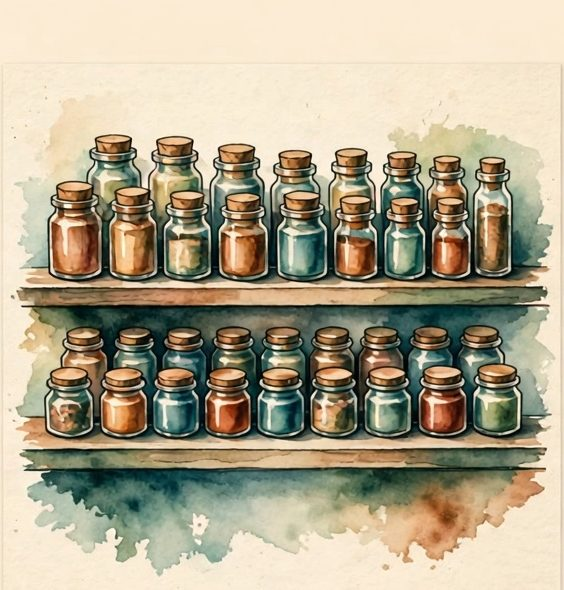
A shelf of many small spice jars, each ordinary, together unrepeatable.
Above the kitchen bench in the keeper's own quarters runs a shelf of many small spice jars — forty, perhaps fifty — each one ordinary, each purchasable in any market on earth for small money. No guest has ever admired a single jar. And yet there is not a cook alive who could stock that shelf identically from memory of one dinner, because the singularity is not in the jars. It is in the proportions: this much of the bitter one, almost none of the smoked, the sweet bought twice as often as the rest. Ordinariness, the house insists in this room, is not the obstacle to uniqueness. It is the ingredient uniqueness is made from.
The mistake this room exists to correct is the search for the exotic component — the rare trait, the dramatic history, the one spectacular jar — as if a self were distinguished by containing something no other shelf holds. Examine actual shelves and the doctrine collapses: the most distinctive kitchens are built from the most common stock, differentiated by measure and habit. A pinch more independence. Half the usual amount of caution, doubled in winter. Ambition used sparingly, like the smoked jar, because a little flavors everything and a little more ruins it. The hand that measures is the biography. The measures are the combination, written in quantities.
So the register declines to be impressed by rarity and declines equally to despair at the common. If your life feels built from standard jars — standard school, standard town, standard sorrows — the house replies that so is every singular life it has ever filed. What no market sells is your exact shelf: these proportions, this order of reaching, this one jar always empty first. The keeper, cooking for one, reaches without looking. Forty ordinary jars, one unrepeatable hand. That is the recipe of the whole hall, set out in its plainest form: you do not need a rarer life. The one in the jars is already, in its measures, yours alone.
66Same Ingredients, Different Kitchen
Two sisters, the house register records, were given their mother's pantry list the Christmas after her death — the same flours, the same tins, the same garden produce in season — and undertook to cook from it independently, each in her own kitchen, in different towns. At Easter the families exchanged visits. The suppers could not have been confused for one another by anyone who had eaten at the mother's table: both were faithful, both were hers somehow, and they were entirely different dinners. Same ingredients, different kitchen. The register files the story without surprise. It has watched the experiment run in every generation, in food and in everything else.
What differs between the kitchens is not the stock but the cook's internal register: the order in which things are reached for, the heat trusted, the moment judged done. Multiply the parable and it covers the whole of this hall. Send the same century, the same town, the same schooling into two cradles and the lives that emerge will diverge at the first decision, because the deciding instrument differs. Even identical twins — the house's favorite test case — part company in the register within a page or two: same ingredients to an almost laboratory standard, and yet the entries will not merge. The kitchen asserts itself. It always does.
The comfort of this room is structural: you are not required to obtain rarer supplies. People exhaust themselves shopping for a more distinguished set of ingredients — a better town, a grander history, a more dramatic set of gifts — when the singularity was guaranteed all along by the kitchen they already are. Work with the stock on your shelves. Cook in your own order, at your own trusted heat. The keeper, who has eaten in both sisters' houses in his time, reports that the mother's table survives in neither and in both. A combination cannot be inherited. It can only be lived, forward, in one kitchen at a time.
67The Odds of You
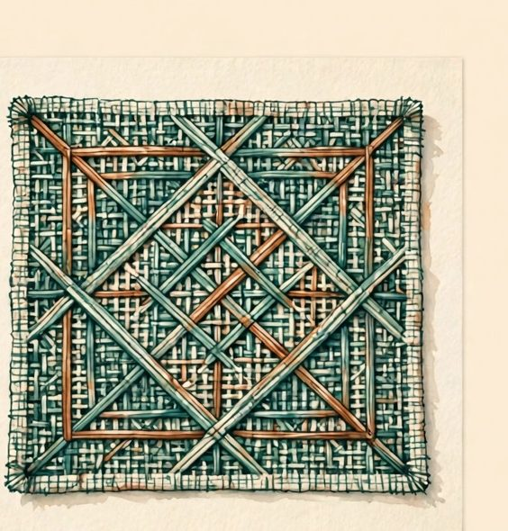
A woven cloth of many threads, the pattern belonging to no single thread.
On the cabinet's top shelf lies a woven cloth of many threads — wool and linen, dyed and undyed, a few threads of an almost garish red — that reads at a distance as one calm pattern. The keeper brings it down for visitors who want their singularity computed, as if it were a sum. The odds of you, he tells them, are not a number this house can file; the arithmetic defeats every ledger. But the cloth makes the shape of the answer plain. Every thread in it is a common thread, sold by the skein in any market. The pattern exists once, because these threads, in this order, under this tension, were woven exactly once.
Consider what must coincide for one particular person to stand at the desk: these parents, in that town, in that decade; this childhood weather of fortune and shortage; the teacher who stayed, the friend who left; the books that were in the house and the one book that was not; the illness at nine, the kindness at fourteen, the accident of the street where the trade was learned. Remove any thread and the cloth continues — but it is a different cloth, warmer or colder, and the person woven from it answers to a different name. The odds are not calculated in this house. They are contemplated, the way one contemplates weather over an ocean: with respect for scale.
And the doctrine that steadies the room is this: an improbable thing is not thereby a precious thing, and a common thing is not thereby a repeatable one. You are not filed under miracle. You are filed under unrepeatable, which is the house's ordinary category — it contains everyone who has ever entered. The cloth goes back on its shelf, one pattern among the cabinet's many, no two alike, none ranked. The keeper's point is made by the shelving itself. To be one of one does not set you above the other cloths. It sets you among them, exactly once, in a building full of exactly-once things. That is the whole wonder, and it is enough.
68You Are a Chord, Not a Note
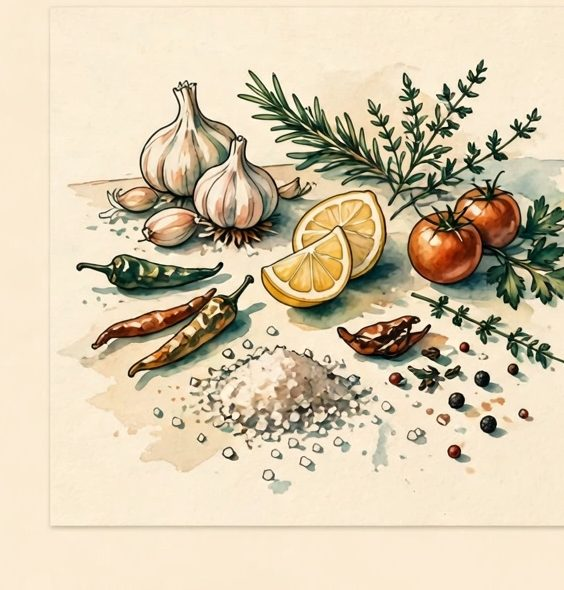
Ingredients laid out on a table, ordinary each, awaiting one cook.
On the kitchen table the keeper has laid out tonight's ingredients in a row — roots, greens, a piece of cheese, oil in a plain bottle — each one ordinary, each one silent. Nothing on the table sounds like dinner. Yet anyone who has cooked knows the supper is already decided more by the arrangement the cook will impose than by anything lying there. In the music corner the piano makes the same argument in another material. A note alone is a fact, flat and complete. Three notes together are a chord, and a chord has a character no note in it possesses: it can be mournful with entirely cheerful notes inside it.
You are a chord, not a note. The register is firm on this because so much self-description goes astray by the single note. Ask a person what they are and they reach for one trait — the loudest one, usually, or the most recently praised — and hold it up as the whole instrument. I am the anxious one. I am the capable one. The house asks, gently, for the rest of the chord: the anxiety, yes, sounding with the humor that arrives a beat later and the stubbornness underneath both, in that order. Heard together, the description stops sounding like a verdict and starts sounding like a person. No single note in the chord is you. The sounding-together is you.
Chords also explain why the same trait behaves differently in different people, a mystery the single-note theory cannot solve. Caution in one chord reads as wisdom; in another, where it sounds against impatience and pride, it reads as delay. Nothing about the note changed. The company did. So the keeper declines to file any visitor under a single trait, however loudly it sounds, and teaches the household to listen for arrangements instead of notes. Play your whole chord when you describe yourself — all the ordinary notes, in their true order, at their real volumes. It is the only honest music a person can make, and no other instrument in the world is tuned to produce it.
69Changing One Number Changes the Lock
The cabinet's small safe has a dial the keeper turns each night, and he demonstrates this room on it for visitors who believe their combination is fixed like a birthdate. Watch, he says, and moves one number by a single place. The lock refuses. A combination altered in one digit is not nearly the same lock; it is a different lock entirely, opening a different door or none. Lives obey the same mechanism. Changing one number — one habit taken up or laid down, one city exchanged for another, one person admitted to the inner rooms — does not edit the person at the margins. It re-keys the whole arrangement, and everything downstream sounds in a new order.
This is the room that answers the fear that change betrays the self. If the self were a single trait, altering anything essential would dissolve it; but the self is a sequence, and sequences survive reordering the way a sentence survives a moved clause: altered, sometimes improved, recognizably continuous. The register's longest files show combinations turning decade by decade — the shy number rotated out by slow degrees, a new number cut by grief or by love — while the hand on the dial remains one hand. The keeper does not call this inconsistency. He calls it a lock doing what locks are for: keeping the register private through every version of its owner.
So change is not the enemy of singularity in this house; it is one of its proofs. A stone cannot change one number. A person can, and does, and remains the only one who knows the current sequence by heart. Keep the dial in your own keeping. Turn a number when the life requires it, without asking the old combination's permission, and without fearing that the turning makes you someone generic. It makes you the same singular lock, reset — as singular at forty as at fourteen, and no more guessable. The safe clicks shut at night on whatever the year has made of the numbers. It has never once opened for a stranger's sequence.
70The Combination Grows With You
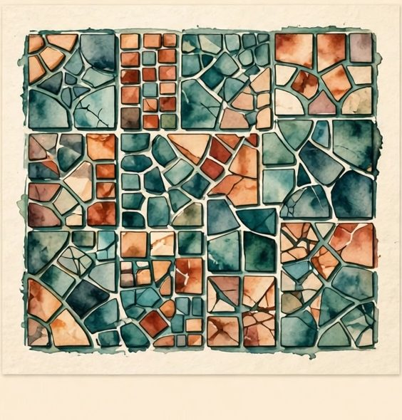
A mosaic of mismatched tiles, no two alike, one picture.
On the garden wall the estate keeps a mosaic assembled from mismatched tiles — broken plates, odd ends from other projects, a child's painted pebble set among them — that resolves, from the bench, into one clear picture of a heron. It was never finished in the sense of being completed; the keeper's predecessor simply kept adding, year by year, whatever the life brought that was too singular to throw away. The combination grows with you the same way. The lock of a child has few numbers. The lock of a person of sixty turns on sequences laid down in decades the child could not have imagined, and it is not finished turning yet.
Growth, in the register's record, does not arrive as replacement. The old tiles are not pried out when new ones come; the picture enlarges around them. The grief of one decade becomes the grout of the next. The trade learned, abandoned, and half-remembered reappears as the tile that gives the corner its unexpected color. Visitors sometimes stand before the mosaic wanting to know which tile is the person. The keeper gives the house's standard answer: the picture is the person, and the picture includes the grout, the gaps, and the one pebble a child painted, which by now is load-bearing. Remove any piece for tidiness and the heron loses its eye.
This room is the hall's answer to the fear that one is too old, or too set, to be singular in any interesting way — as if singularity were a property of the young. The register holds the opposite: the combination only lengthens. Every year files new numbers, in your order, at your cost. Nobody of sixty is less one of one than they were at sixteen; they are considerably more so, having had forty-four more years of unrepeatable sequence to lay down. The mosaic is still growing on the garden wall. There is space left on purpose. The keeper has checked: the grout is fresh in one corner, and the picture, unfinished as it is, has never looked more like its subject.
71Nobody Can Guess Your Combination
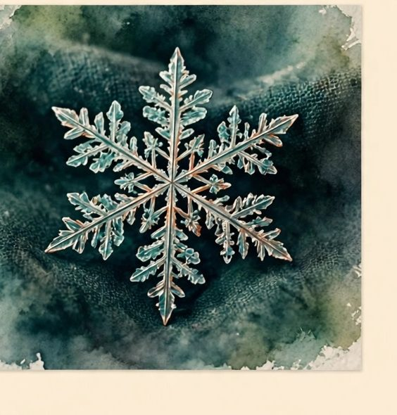
A single snowflake on dark cloth, unrepeatable and already melting.
On dark cloth, under the lamp, the keeper once set a single snowflake for a visitor who had come in out of the storm still shaking it from his coat. They looked at it together for the few seconds it allowed: sixfold, intricate, and already simplifying at the edges into water. The science of the matter is well known and the house does not dispute it — no two flakes alike, each one a brief architecture of conditions met only once on the way down. But the keeper's interest was never the flake. It was the visitor's combination, which shares the flake's logic without the flake's hurry: conditions met once, an order assembled once, and no route back to assemble it again.
Nobody can guess your combination, and this room examines why the unguessability matters. It is not that the numbers are hidden by any effort of yours. It is that guessing would require the whole sequence — not your visible traits, which anyone may list, but their order, their weights, the years that set each one — and that information exists in full in exactly one place. People who believe they have you summed up have hold of a few digits and a great deal of confidence. The register is unbothered by this. A few digits open nothing. They never have, on any lock this house keeps.
There is a restfulness in the doctrine that the keeper has watched settle over visitors like the quiet after snow. You are not required to make yourself legible to be legitimate. The combination does not need to be published, defended, or even understood by its owner in full — most owners know their early numbers better than their late ones, and guess wrong about themselves with some regularity, which the register finds entirely consistent with being a lock rather than a notice board. The flake melted before the minute was out. The man who carried it in stayed an hour, unguessed and entirely himself, and the house counted the visit a success on both counts.
72A Lock That Opens From the Inside
Among the cabinet's curiosities is a lock made by a locksmith of this town in the last century, whose keyhole was cut, by special order, on the inner face. It cannot be opened from the corridor at all. The keeper keeps it in this hall as the closing emblem of the combination: the lock of a person opens from the inside. Others may knock, and should be answered kindly; they may describe the door, sometimes accurately; but the sequence is turned, if it is turned, by the one who lives within the register. This is not suspicion. It is the ordinary constitution of a self, stated in brass.
The doctrine completes the hall's kindness. A combination lock exists to keep a register private — not to imprison its owner, and not to accuse the world. From inside, the same mechanism reads entirely differently: not a barrier but a boundary, the shape of a room that is one's own. Much misery in the register's files comes from owners who believed their lock should open from outside — who waited for the right person, the right recognition, the right verdict to turn their numbers for them. The house records, without exception, that no such turning ever arrived. The mechanism is not built for it. It never was.
So the hall of the combination closes with an instruction rather than a summary: keep your hand on your own dial. Open to whom you choose, at the depth you choose, in the order you choose — the lock permits all of that; locks are not walls. But do not hand the sequence over, and do not apologize for the door. The keeper returns the curious lock to its drawer, keyhole inward, in the dark it prefers. Every visitor leaves this hall carrying the same mechanism, oiled by a lifetime, opening and closing at one person's discretion. It is, the register notes in its final hand, the most ordinary equipment in the world. Everyone has one. No two turn alike.
73Not Better, Only One
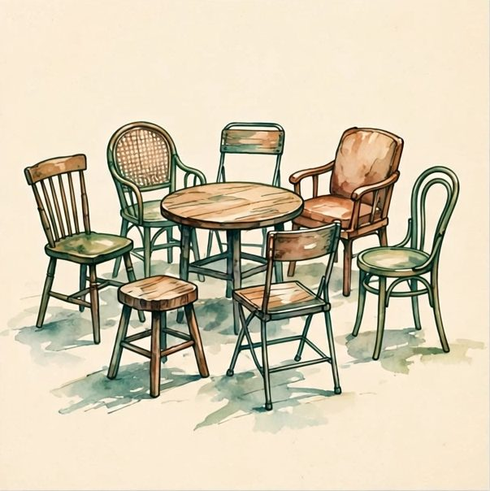
Many unlike chairs around one round table, each taken.
Around the round table in the keeper's hall stand many unlike chairs — a tall carved chair, a stool, a bentwood, one with a cushion tied on with string — gathered over decades, no two alike, and on a full evening every one of them is taken. The keeper loves the table for the argument it settles without words. A guest once apologized for the plain chair he had been given, as if he had drawn a lower rank of seat. The keeper set him right with the house's shortest doctrine: at this table there are no ranks, because there is nothing to rank. Not better, only one. Each chair serves a sitter. That is the whole of its office.
The confusion this room exists to clear is old and expensive. People hear that each person is singular and quietly translate it, in the privacy of their minds, into a standings table — as if one of one were a position, first place in a category of one entrant, a medal struck for a race nobody else ran. The register refuses the translation absolutely. A chair is not better for being the only carved one, nor worse for being the stool. They differ — in height, in comfort, in history, in the sitter each one fits — and difference, in this house, is a description, never a verdict. The table is round precisely so that no head of it exists.
Bring the doctrine home to the table you actually sit at. Around it are people whose combinations open rooms yours cannot, and close doors yours walks through without noticing. None of that arithmetic yields a ranking, because the units differ and the sum was never the point. You are not the carved chair, and you are not the stool; you are one of one, which is the table's only seating plan. The keeper pours for everyone from the same pot, in the order of the chairs as they stand. Some evenings he looks around the full table and files the whole scene under the register's favorite heading: no two alike, all of them taken, none of them first.
74Uniqueness Is Not a League Table
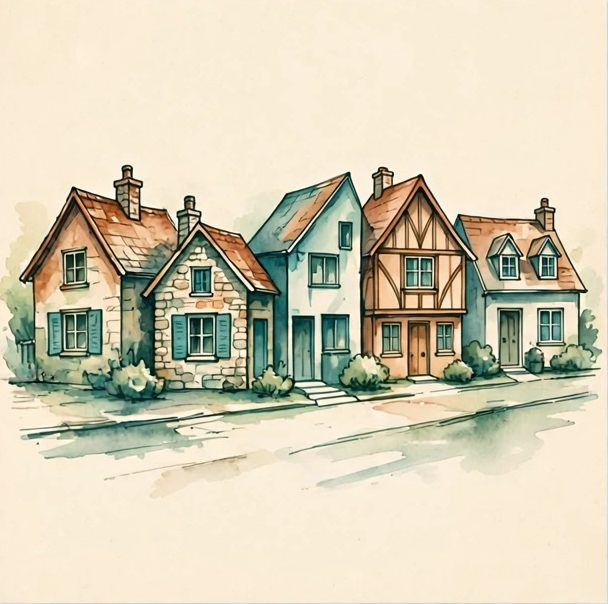
A row of very different houses along one street, none ranked.
Along the street below the house runs a row of very different houses: a tall narrow one painted without fear, a low one behind a hedge grown philosophical, a house all windows, a house that shows the street almost nothing. The postal route serves them in order, and the order is geography, not judgment. Nobody on the street supposes the tall house has won. The keeper walks the row each morning and thinks it the best street furniture a doctrine could ask for: uniqueness is not a league table, whatever the newspapers of the inner life may print. The houses are not competing. They are standing, each on its own plot, in its own weather.
A league table requires a single measure, and that is precisely what persons refuse to supply. Rank pianists and the gardener disappears from the table entirely, not because she failed it but because it never asked her question. Every ranking of people smuggles in one scale — money, fame, speed, serenity — and demotes every other scale to noise. The register, which keeps all the scales and trusts none of them with the final word, files the league table under its one named error: comparison, dressed for business. Houses along a street are the corrective image. Ask which is best and the street itself seems to shrug: best for what, for whom, in which light?
The house does not deny that ladders exist in the world, in trades and tournaments where they belong. It denies their jurisdiction here. Your combination is not climbing anything. It stands on its plot, in the row, receiving its letters in the order of the street. The tall house gets no extra post for its height; the hidden one is not fined for its hedge. Stand on your own plot in the same spirit. The register's entry for the whole row is a single line, and the keeper considers it sufficient for every address he has ever served: each one different, each one standing, none of them ranked.
75The Comparison Trap
On the desk lie two registers side by side, bound alike, and every keeper's apprentice has made the error this room is named for: reaching, in a hurry, for the wrong one — reading a visitor's entry against the neighboring file, and wondering why nothing tallies. The comparison trap is exactly that clerical mistake performed on lives. Your file is taken up alongside another's; the entries are checked line against line — their year of arrival, their page of honours, the handwriting of their fortune — and yours is pronounced thin. But nothing in the comparison was ever evidence. The other register is simply not your book. It was never meant to tally with yours.
Notice the trap's mechanics, because it springs identically every time. It selects one line — the salary line, the marriage line, the line of visible ease — from a file of ten thousand entries, and reads that line as the whole account. It ignores order, which this house has established as the soul of the matter: the other's ease may stand on a page of losses your file does not contain, written in years you did not witness. And it ignores the desk's first rule, that registers are kept for keeping, not for contests. A file compared is a file misread. The keeper trains his apprentices out of the reach in a week. His visitors take longer, and he is patient with them.
The remedy is not to close your eyes to other lives; the street is there, and its lit windows are part of the world's honest furniture. The remedy is to return the hand to your own register and read your entry in its own terms: what has been entered, in what order, at what cost, toward what current page. Judged so, files thicken remarkably. The neighboring book goes back on the shelf, unranked, where it can be a neighbor again instead of a measuring instrument. The keeper blots the page and closes your register gently, on the only comparison this house permits: your present entry, against your own earlier hand — and even that one, the register insists, is to be read kindly.
The One-of-One Desk
One desk receives all correspondence for this cabinet — questions, corrections, greetings, and word of any singular thing of yours that the world has lately tried to file under ordinary. It is read in the order it arrives.
76Special Is a Word That Starves
Flowers of many kinds in one garden bed, none asked to be the garden.
In the front bed the keeper grows flowers of many kinds together — tall spires, low mats of color, one rose of unreliable temper — and he has noticed that visitors reserve a certain word for whichever is currently in bloom, as if the bed conferred it in rotation. Special. The house has come to distrust the word, and this room records why. Special is a word that starves. It must be fed daily — with fresh evidence, fresh witnesses, fresh victories over the ordinary — and even fed, it wakes hungry, because its diet is comparison and comparison never fills a plate for long. The keeper has watched it eat the sleep of the gifted and the ordinary alike.
Set against it the word this house prefers: unrepeatable. Unrepeatable asks for no feeding at all. It was true of the flower before it bloomed and remains true in February, underground, doing nothing that anyone can applaud. It does not expire when a finer bed is planted across the street, because it was never a ranking; it is a census fact, entered once, like a birth date. The rose is unrepeatable in winter. The low mat of color is unrepeatable under snow. Neither is special, and the keeper is careful with the distinction, because everything in this hall depends on it: singularity that needs witnesses is a performance; singularity that is a fact is a rest.
Trade the word, then, wherever you keep your own accounts. A person determined to be special must win the title afresh each morning against the whole field of other people, and the register has never seen the title held past a season without cost. A person who knows they are unrepeatable holds a fact no season can repossess. The bed does not compete with itself. Blooming and resting are both entries in the same honest file. The keeper deadheads the spires and waters the mats with the same can, in the same round, and the garden — which has never once been asked to be special — is, by every account the street keeps, the one people slow down for.
77Everyone at the Table Is One of One
An empty podium standing in a quiet field, with no one waiting to use it.
Outside the town, in a quiet field where a fair is held some years and not others, stands an empty podium, weathered, its steps going up to a view of grass. The keeper passes it on his walks and reports that it is never less empty for the races having been run elsewhere. He keeps the image for this room, where the hall's arithmetic is finally done aloud: everyone at the table is one of one. Not the winner at the table. Not the most interesting guest. Everyone — the champion and the one who arrived late, apologizing, with wet shoes. The podium stands empty because the doctrine needs no one standing on it.
The arithmetic is easily said and harder to believe at the hours when belief matters, so the register argues it from inventory. The table seats a person whose combination includes a famous gift — and the gift, examined, is three ordinary notes in an unusual order. It seats a person whose combination includes no gift anyone has named — and the unnamedness, examined, is a fact about the namers, not the combination. Both files run to the same number of pages. Both locks turn on sequences no second person holds. If the house issued certificates, which it refuses on principle, it would have to issue one to every chair at the table, and the certificate would say the same unglamorous thing: one of one, like all the others.
That last clause is the room's whole gift, and the keeper delivers it without lowering his voice: like all the others. Uniqueness that applied only to you would be a burden and a loneliness. Uniqueness that applies to everyone at the table is a climate — the ordinary air of the human street, breathable by all. The podium in the field can stand empty forever; nobody needs to climb it to qualify for the register. Supper is served at the round table, to every chair, and the entry for the evening is the same entry as always: each guest singular, each guest seated, the category complete with nobody left standing outside it.
78The Neighbor's Singular Life
In the cabinet's instrument drawer rests a balance scale, and the keeper, demonstrating this room, sets on its two pans two unlike objects: a stone from the river and a brass key. The beam settles level. The objects share nothing — not material, not purpose, not history — except the one property the scale exists to read. The neighbor's singular life is best approached with the scale in mind. Across the fence stands a combination as complete as yours: different keys, different order, a whole register of noticings and habits and quiet loyalties, most of it invisible from your side of the fence, as most of yours is from theirs.
It is a common clerical error — perhaps the commonest in the files — to read a neighbor's life in the abridged edition: the part visible from the fence, the version performed at the gate. Judged by the abridgement, their combination looks simple, sometimes enviably so. But the register keeps the full text, and the full text of any life is long: pages of weather nobody witnessed, entries in a hand that changed over the decades, drawers understood by one person only. The keeper, who has registered the whole street, testifies that there are no thin files. There are only files whose thickness is not visible from the fence. The beam does not care what the objects look like. It reads what they weigh.
So the house counsels a discipline of the imagination where neighbors are concerned: assume the full text. Assume the stone and the key weigh what your own pans weigh, because they do. The neighbor's strange calm, their odd habit defended for forty years, their corner seat and their bitter tea, their unguessed combination turning in the dark — all of it mirrors your own equipment, differently arranged. Level beam, unlike objects. That is the street's entire sociology as this house keeps it, and it ends most fence-side judgments before they harden: not my kind of life, and exactly my weight of life, standing in its own garden, one of one.
79Envy of Another's Difference
A stranger's strange, bright life, seen through a lit window at dusk.
At dusk the houses along the street light their windows one by one, and through one of them, some evenings, the keeper glimpses a stranger's life arranged for celebration — a table set for many, a brightness of preparation, voices warming. Something in the passerby answers before thought does: not hunger for the dinner, exactly, but for the difference — the sense that in that house a quality exists that his own rooms lack, some ease or color his combination failed to include. Envy of another's difference is the register's name for the feeling, and the house files it, as it files all envy, under information rather than shame.
Read as information, the glimpse reports something accurate about the reader. The quality that shines through the window — the gathering, the ease, the color — shines because some part of the passerby's own register has been waiting for it, the way a lock's tumblers wait for their number. Nobody envies a difference their combination has no socket for. The brightness is therefore a kind of survey: it marks, in the envier's own file, an entry left blank or a drawer never opened. This is not a verdict on the life being lived; it is a marginal note on the life doing the looking, and the keeper writes it in pencil, as all such notes deserve.
What the house forbids is the conversion of the note into a ranking — the old error, comparison, arriving by the back path in its evening clothes. The stranger's difference is not a higher score; it is another combination, carrying its own costs in drawers the window does not show. Take the information and leave the verdict. If the gathering is what shone for you, the register suggests a table can be set in your own rooms, in your own order, for your own people. The window darkens; the preparation becomes a party; the passerby walks home with a single useful line added to his file. Envy, properly read, is just the combination announcing one of its own unopened rooms.
80Being Ordinary in Most Ways
Different birds sharing one wire, each in its own feathers.
Above the street, on the wire that runs from pole to pole, different birds share the line at evening: starlings, a pigeon out of its usual company, two swallows late for the south. They sit at irregular intervals, each in its own feathers, facing slightly different directions, and the wire bears them all without comment. The keeper ends this hall at the wire because it states the closing fact better than the register can. Being ordinary in most ways is not the exception among singular creatures. It is the standard condition — the condition of every bird on the wire, every chair at the table, every house on the street. Most of any life is the common stock of lives.
Count it honestly in your own file and the count is bracing: most of your traits are shared, most of your days are routine, most of your sorrows are the standard sorrows, most of your joys the standard joys, described in words a thousand people used this morning. The house does not find this deflating; it finds it the necessary ground of everything the hall has claimed. Singularity was never located in the parts, so the parts may be as ordinary as they like. It lives in the combination — this ordinary stock, in this unrepeatable order, under this one's hand — and a wire of ordinary birds is, as a whole, a sight that has never occurred before and will not occur again in that arrangement.
So the hall closes where the doctrine always intended: not with an anthem, but with a wire at evening, fully occupied by the ordinary. You do not need to be remarkable in most ways to be unrepeatable in the one way that counts. You need only be the whole combination, which you cannot help being, and let the register record it without inflation or apology. The birds settle. The light goes. The keeper, locking the cabinet for the night, enters the day's last line in his steady hand — the same line, word for word, that stands at the head of every file he keeps: one of one, like all the others, and the house is quiet.
81The Relief of Not Competing
There is a room in this house the keeper keeps deliberately unmeasured. No stopwatch hangs in it, no league table, no window onto the neighbor's garden. Visitors arrive there out of breath from years of informal racing — faster than the colleague, further than the friend, earlier than the brother — and the first thing they do is look around for the standings. There are none. The drawer assigned to standings is empty, and has been empty since the house was built, and the keeper opens it for any visitor who asks, without comment, the way one opens a window.
The relief is physical when it comes. A person who has stopped competing discovers that the race was never entered by anyone else; the other runners were running toward their own finish lines, on their own mornings, at their own pace, and most of them believed they were behind. Competition required an audience of rivals that existed mostly as an arrangement inside one head. To retire from it is not to retire from effort. The work remains. The bench still asks its honest hours. What changes is the scoring: the work is measured against the work, and against yesterday's version of it, and against nothing alive.
The keeper says the cabinet taught him this. No drawer in it competes with another drawer. The spoon collection does not envy the buttons their shine. Each singular thing is simply kept, in its own compartment, at its own depth, and the cabinet is richer for the absence of ranking than it would be for any order of merit. A person, he says, is the same. You were never in anyone else's drawer. There was never a table where your worth was being compared to a stranger's, except the one you carried in, and that one, the house is pleased to report, can be carried out again and left by the door.
82Difference Without a Podium
A table set differently at every place, each setting complete.
In the dining room the house keeps a long table, and the table is set differently at every place. One setting has a blue glass, another a chipped cup, a third a spoon worn thin by a century of hands. No setting is the place of honor. The keeper rotates where he sits, and guests who arrive expecting to be ranked by their chair discover only that each place has what a meal requires, arranged according to the habits of whoever usually sits there. Difference, at this table, is information about appetite and history. It is not a verdict about anyone's height.
The world outside prefers its differences on a podium — first, second, third, and the long remainder standing on the ground looking up. The podium is a crude instrument. It can hold only one measurement at a time, so it measures what is easiest to count and calls the count the truth. But a person is not one measurement. The fastest runner at the table may be the slowest reader; the celebrated cook cannot mend a chair. To place whole people on steps is to ask a staircase to do the work of a portrait, and the staircase, unsurprisingly, fails.
The house proposes the table instead. Around a table, differences sit side by side and become useful: the one who notices flavor beside the one who notices timing, the one who talks beside the one who listens so well that talk improves. Nothing needs to win for the meal to succeed. The keeper, washing the blue glass and the chipped cup with the same care, offers the room's whole doctrine in a sentence he repeats to new staff: different is a direction, not a rank. A drawer on the left is not above a drawer on the right. It is only, and exactly, elsewhere.
83When "Unique" Becomes a Sales Pitch
A market stall at closing time, its brightest banner taken down and folded.
Now and then a traveler arrives at the One-of-One Desk carrying a brochure. Somewhere out in the world, uniqueness has been put up for sale: courses that promise to reveal it, methods that guarantee to sharpen it, certificates that attest to it in gold lettering. The traveler wants to know whether the house offers anything similar, perhaps at a better price. The keeper reads the brochure with genuine courtesy, the way he reads all documents brought to the desk, and then slides it gently into the drawer where the house keeps weather reports from other years — interesting, well printed, and about a climate that does not exist here.
The house does not scold the sellers, and it does not scold the buyers, who are usually tired people hoping to be reassured that they matter. It simply points out the arithmetic. A thing that every person already is, by birth and by biography, cannot be sold to them, any more than a keeper could sell a visitor his own hands. What is sold in such brochures is never singularity itself. It is the feeling of being certified — and a feeling, unlike a fact, must be repurchased whenever it fades, which is precisely why it is such good business and such poor furniture for a life.
So the cabinet makes no pitch. Its drawers carry no prices, and the register records no transactions of that kind. The keeper's only statement on the subject hangs in small plain lettering where the staff can see it: singularity is not stocked here because it was never scarce. If you have come to buy proof that you are one of one, the house will disappoint you kindly and completely. If you have come to look at what one of one actually looks like — ordinary, unrepeatable, already yours — then pull up a chair. That viewing has always been free.
84A Quieter Word: Unrepeatable
Below the house there is a grove the keeper walks in most evenings, and no two trees in it have solved the problem of being a tree in the same way. One leans. One forks early and spends its height in two directions. One is all trunk, stingy with branches, and one is a fountain of them. The keeper is fond of the grove because it corrects his vocabulary. Unique, out in the world, has gathered noise around itself — it sounds like a trumpet, a claim, an advertisement. In the grove nothing advertises. The trees are not unique. They are simply unrepeatable, which is a quieter and more accurate word.
Unrepeatable asks nothing of its subject. A snowflake does not strive to be unrepeatable; a fingerprint does not compete for the title. The word describes a condition, not an achievement, and conditions do not need defending. This is why the house prefers it. Unique, in common usage, has come to imply a contest with a single winner, as if only one person in the room could qualify. Unrepeatable has no such arithmetic hidden inside it. Everything that has ever grown, fallen, or been made by a particular pair of hands is unrepeatable, all of it, at once, without any of it canceling the rest.
The keeper has begun, in the register, to write the quieter word in the margin beside certain drawers, not as a correction but as a reminder to himself. The singular things in this cabinet were never trophies. They are specimens of the ordinary law that nothing made by a life is made twice. Stand in the grove at dusk, he tells visitors, and the lesson stops being a lesson and becomes a view. Tree after tree, shape after shape, none of them first, none of them last. Only unrepeatable, the way everything you have ever loved was unrepeatable, including you.
85Copies, Imitations, and Influences
Two workbenches side by side, one old and scarred, one new.
The eighth hall of this house opens, unfashionably, with two workbenches. The first is old, its surface scarred by a master's lifetime — saw marks, ink rings, the pale ghost of a thousand measurements. The second stands beside it, new, its top still pale, made by the apprentice who spent ten years working at the first. Visitors expecting a hall of pure originals are sometimes disappointed by this arrangement. The keeper is not. He will tell you that the second bench, though built entirely by copying the first, is not a copy of anything. It is where a second life of work will happen, differently.
This hall exists to clear an old misunderstanding out of the house: that singularity is made by refusing all models, the way a fortress is made by refusing all roads. The record shows the opposite. Every singular thing in the cabinet arrived by way of other things — a style learned, a method borrowed, a hero studied down to the fingernails and then, slowly, departed from. Imitation is not the opposite of originality. It is originality's long childhood, and the houses that pretend otherwise are usually hiding their own workbenches in the back, where the keeper politely declines to look.
What distinguishes the second bench is not that it avoided the first, but that life will mark it differently. The scars will come in another order, from other projects, in another hand's weather. Influence flows into a person the way grain runs through wood: it determines the material, never the shape of what is finally built. So the hall begins where honesty begins — with the admission, entered in the register without shame, that everything singular was first an imitation, and that the copying years are not a debt to be hidden but the foundation the whole cabinet stands on.
86Everyone Starts by Copying
Two paintings of the same hill, rendered in entirely different styles.
In the corridor hang two paintings of the same hill, and every visitor stops at them sooner or later. The first is by the old teacher — spare, grey, economical, the hill reduced to its bones. The second is by his student, painted at nineteen in deliberate imitation, and it tries so hard to be the first that the effort itself is moving. The brushwork is borrowed, the palette is borrowed, even the melancholy is borrowed. And yet the hill is not the same hill. Something in the student's hand — a haste, a warmth in the lower field — refused the loan. The keeper hung the pair together on purpose, as the hall's first text.
Nobody begins at the beginning of themselves. The child copies sounds before speech, letters before writing, recipes before cooking, the master's hill before any hill of one's own. This is not a failure of imagination that maturity later repairs; it is the mechanism by which imagination is built in the first place. The hand must learn what hands can do by doing what other hands have done. To demand originality from the first attempt is to demand fruit from a tree in its planting year, and the keeper has seen more talent discouraged by that demand than by any lack of gift.
The student's painting is kept in the cabinet, in a drawer of beginnings, and it is not kept as an embarrassment. It is kept as evidence that copying, done honestly and completely, is how a style is excavated from under someone else's. The student did not find his own hill by avoiding his teacher's. He found it by painting the teacher's hill until his own began, almost without permission, to appear at the edges. Everyone starts by copying. The only real choice the house recognizes is whether the copying is done openly, with gratitude, or anxiously, with the sources hidden — and only one of those ways has ever led anybody out the far side of it.
87The Apprentice's Honest Decade
The cabinet holds an apron that took ten years to wear in, and the drawer card, in the keeper's hand, says only: the honest decade. It belonged to an apprentice who arrived wanting a style by spring and stayed, instead, for ten years of other people's methods — grinding pigments the old way, lettering alphabets he did not invent, setting joints his master had set ten thousand times before him. There were seasons when he believed the decade was a delay. The register records it differently. It records the decade as the work itself, wearing a disguise of repetition.
An apprentice's years look, from outside, like the absence of a self. The exercises are assigned, the models are fixed, the corrections are someone else's. But something is accumulating that no shortcut has ever produced: judgment. The hand learns a thousand small refusals — this line too heavy, this joint dishonest, this color a lie — and judgment, unlike technique, cannot be copied, because it is made entirely of one's own accumulated yes and no. By the end of the decade the apprentice has not become his master. He has become the sum of ten thousand decisions he made while trying to, and that sum is a person.
The house honors the honest decade because so many visitors arrive ashamed of theirs — the years spent sounding like a teacher, building like a mentor, writing like a beloved author. The keeper shows them the apron. Nothing about a long apprenticeship is wasted time, provided the student was awake during it; even the boredom taught the weight of the tools. What the decade asks is patience, and what it pays is the only kind of originality worth having: not a style adopted like a coat, but a manner worn in like this apron, at the pockets, by use.
88Influence Is a River, Not a Theft
A river branching into a delta, each channel finding its own way to the sea.
The house keeps a map of a river delta above the One-of-One Desk, printed a century ago, the channels inked in blue that has gone the color of old ice. The keeper chose it as the hall's governing image. A great river arrives at its delta carrying everything the mountains gave it — snowmelt, gravel, the dissolved substance of a thousand hillsides — and then, instead of diminishing, it divides. Channel after channel carries the same water outward, and each channel, following its own banks, arrives at the sea by a route no other channel took. Influence, the keeper says, studying the map, works exactly like that. It is not a theft. It is a watershed.
Theft has a victim who is left with less. Influence leaves the source undiminished and the receiver altered, which is why the house refuses the guilty vocabulary some visitors bring to the desk. The poet you studied is not poorer for your study. The river does not bill its delta. What flows into a person — a teacher's patience, a city's light, a parent's way with bread — becomes that person's water, to be carried through that person's particular terrain. To call it stolen is to misunderstand both rivers and people, and to make gratitude impossible where gratitude is simply the accurate response.
Every singular thing in the cabinet is a delta of something. Trace any drawer backward and you find tributaries: a grandmother, a port city, a book read at fourteen, a war, a garden. None of it cancels the singularity at the mouth of the river, because no two lives receive the same water in the same order over the same ground. The map hangs where the keeper can see it while he writes, a reminder that a person's sources are not the person's shame. They are the person's watershed — and a delta, precisely because it is fed, is the most fertile ground on the whole map.
89Accents Form Anyway
A brass metronome standing on a table, mid-swing.
On the music table stands a brass metronome, kept wound, ticking at whatever tempo the last visitor left it at. The keeper uses it to demonstrate the hall's most consoling fact. Two students may practice to the same metronome, under the same teacher, playing the same exercises for the same years — and accents form anyway, in both of them, like weather forming over two similar valleys. One leans into the beat, one leans back; one attacks a note, one persuades it. Nobody assigned these differences. They are what a body does to a discipline when the discipline passes, faithfully, through a particular pair of hands.
An accent, in speech or in playing, is the part of the performance that the performer cannot hear. It is formed by the shape of a mouth, the length of a road to school, the first voice ever loved. This is why the house treats accents as the purest evidence in the cabinet: they are singularity that nobody performed, arranged, or applied for. You cannot purchase an accent, and you cannot fully shed one, and both facts are mercies. They mean that your manner of doing anything — speaking, drawing, listening, loving — carries a signature that was never designed, and therefore never needs defending.
So the keeper advises visitors to stop auditing their work for originality, which is a question the work cannot answer, and to listen instead for the accent, which is the answer already sounding. It is there in the sentences you write when you are tired, the order in which you arrange a shelf, the jokes only your household makes. The metronome ticks the same for everyone. What differs is the lean. And the lean, accumulated over a lifetime of faithful practice at other people's tempos, is one of the things the house means, in the end, by a self.
90The Cover Version That Finds Its Voice
The cabinet's music drawer contains a songbook that has been sung from for eighty years, its pages marked by four generations of singers, none of whom sang the songs as written for long. A wedding singer slowed the third verse because the bride was crying. A grandfather lowered every chorus into his own range and kept it there. A girl of sixteen, singing to a kitchen, found an ache in a cheerful song that its composer never put there and every listener since has heard. The book is the same book. The songs, by the house's reckoning, are unrepeatable — each performance a cover version that found, somewhere in the singing, its own voice.
The cover version is the honest emblem of this hall, because it confesses its source on its face. There is no pretense that the song sprang from nowhere. And yet nobody who has heard a great cover doubts that something singular occurred: the borrowed melody passed through a particular life — its losses, its tempo, its weather — and came out marked. The marking was not added by straining to be different. It accumulated the way the grandfather's lower choruses accumulated, by the simple pressure of a real person doing a real thing in the only range available to him.
Visitors sometimes ask the keeper where the line falls between covering and creating, and he declines to draw it, because the drawer suggests there isn't one — only a slope. At one end, the singer imitates a recording note for note; at the other, the song is barely recognizable; and everywhere along the slope, a voice is doing what voices do, which is to be itself despite its best efforts at disguise. Your life is lived largely in cover versions: other people's recipes, phrases, professions, prayers. Sing them in your own range. The range is not the limitation. The range, the keeper says, closing the songbook, is the whole instrument.
The One-of-One Desk
One desk receives all correspondence for this cabinet — questions, corrections, greetings, and word of any singular thing of yours that the world has lately tried to file under ordinary. It is read in the order it arrives.
91Steal the Method, Not the Face
A young tree grafted onto old stock, the join wrapped and healing.
In the orchard behind the house stands a tree the keeper grafted himself years ago: an old, proven stock, chosen for its roots, and a young cutting bound onto it with wax and twine. The join has long since healed into a visible seam. Visitors sometimes ask which part is the real tree, and the keeper laughs, because the fruit gives the only answer that matters — it is neither the old tree's fruit nor the cutting's. It is this tree's, borne on old roots, in this soil, in these seasons. The graft is the orchard's whole philosophy, performed annually with a sharp knife and no embarrassment whatsoever.
From this the hall draws its one piece of advice about borrowing, and it is practical rather than moral. Steal the method, not the face. A method is a way of working — how the potter centers clay, how the essayist earns a paragraph, how the carpenter tests a joint — and methods are the common inheritance of everyone who has ever practiced anything; they travel from hand to hand the way grafting knives travel, improving slightly with each owner. A face is something else: a finished manner, a look, a persona. To take a face is to hang someone else's portrait in your window and hope the street doesn't notice the frame is empty behind it.
Methods, taken honestly, do not make a person derivative, because a method must be re-performed by a living body and is changed by the performance. The young tree does not produce the old tree's harvest in a new location; it produces its own, on borrowed strength, which is what every apprentice's work has ever been. So graft boldly, the keeper says, and label your grafts in the register without flinching. Roots are nothing to hide. The seam where the borrowed meets the grown is not the flaw in the tree. It is, very often, exactly where the fruit sets.
92Your Teachers Live in Your Work
Practice brush strokes covering a sheet, stroke over stroke, abstract.
A practice sheet hangs in the corridor of this hall — a single page covered edge to edge with brush strokes, hundreds of them, made by a student of calligraphy over one long winter. No characters, no words, only the stroke itself, repeated until it stopped being the teacher's stroke and became a handwriting. The keeper points out the top of the sheet, where the strokes are careful copies, tight with effort, and then the bottom, where they have loosened into something unmistakably personal. Between the two lies no single moment of decision. Nobody signed a declaration. The teacher simply, gradually, moved into the student's hand — and so did the student.
Your teachers live in your work whether you acknowledge the tenancy or not. The grandmother is in the way the soup is salted, before tasting, with confidence. The foreman is in the way a task is divided before it is begun. The beloved novelist is in the length of your sentences and the beloved musician in the timing of your jokes. This is not a haunting; it is a household. The dead and the distant go on practicing their trades inside the living, every day, at benches they never saw. The register considers this one of the few reliable forms of survival the world actually offers, and treats it accordingly — as ordinary, and as sacred.
The visitor's task in this room is therefore not to evict anyone. It is to take the census honestly. Name whose stroke is whose, now and then, in the margin of the practice sheet; gratitude is easier with the names written down, and so is the quiet surprise of finding how much of the sheet, by the bottom, is in a hand that belongs to no one else. The teachers do not mind sharing the page. Teachers, the keeper notes, turning the sheet toward the light, are the only residents of this house who hoped all along to be outgrown in exactly this way.
93Originality Arrives Late and Quietly
There is a lamp in the reading room that visitors never remark on at noon. By dusk it has become the room's whole character — the warm circle on the table, the softened corners, the reason the chairs are arranged as they are. The keeper offers it as the true picture of how originality arrives in a life: not announced at the start, not installed by decision, but visible in retrospect, once a person has worked long enough for their own light to be the thing the room is arranged around. Early visitors to a life see mostly the furniture everyone has. Later ones see the lamp.
The young are often in despair about this timing, and the house is gentle with them, because the despair is understandable. To be twenty-five and indistinguishable, in one's work, from one's teachers feels like a verdict. The register reads it as a season. Originality is a late crop because it is grown out of everything that came before — out of the imitations, which supplied the skill; out of the influences, which supplied the water; out of one's own long weather, which no curriculum can accelerate. A person cannot schedule the dusk. A person can only keep working through the afternoon, in the borrowed light, without concluding that the afternoon is the whole story.
And it arrives quietly, which is the part nobody warns the young about. There is no morning when the work suddenly becomes one's own with trumpets. There is only the gradual discovery, usually made by others first, that the accent has deepened, the choices have grown consistent, the lamp — unnoticed — has been lit for some time. The keeper's advice in this room is a single sentence, often repeated, never improved upon: do not audition for originality. Practice honestly, credit your sources, stay at the bench. Originality is not the performance. It is what the room looks like, years later, when someone finally visits at dusk.
94The Mosaic Is Still Yours
A lighthouse offshore, and a small lit lamp answering it from the shore.
From the point at the end of the garden, on a clear night, you can see the lighthouse offshore doing its slow rotation, and in the window of the keeper's cottage a small lamp that he lights at the same hour — not in competition, and not quite in imitation either, but in answer. The two lights belong to the same coastline. The great one warns ships off the rocks with all the authority of the state behind it. The small one marks a door, a dock, a kettle. Neither diminishes the other; a sailor uses both, and would be poorer, and possibly wrecked, with only one of them. The house keeps this view as its teaching about assembled lives.
A person is a mosaic, and the house has never understood why that word frightens anyone. Every tessera came from somewhere: this blue from a mother's kitchen, this rough stone from a hard decade, this gold fragment from one great teacher, this dark one from grief, this bright ordinary one from a friend who laughed at the right moment. Assembled mosaics are the only kind there are. The fantasy of the self carved from a single block of untouched marble belongs to statues, and statues, the keeper notes, are famous for exactly one thing: they never change, never learn, and never once make tea for anybody.
What makes the mosaic yours is not the provenance of its pieces but the arrangement — what stands beside what, what was kept, what was quietly left in the quarry. No other person received your pieces in your order, and the picture they form exists exactly once. So light the small lamp without apologizing to the lighthouse. Answer the great lights that formed you with a light of your own size, from your own window, at your own hour. That is not a lesser entry in the register of lights. The keeper, trimming his wick, calls it by its proper name: correspondence.
95When Imitation Loosens Its Grip
Two sets of ripples meeting and crossing on a still pond.
The garden pond is small enough that a thrown pebble's rings reach the far bank and come back changed, and on still evenings the keeper throws two stones, one after the other, and watches. Where the two sets of ripples meet, they do not cancel and they do not merge into one pattern. They cross, briefly interfere, and pass through each other, each continuing on its own geometry. Visitors who have been worrying about their influences are made to watch this for a while. It is the hall's gentlest demonstration: two patterns can occupy the same water without either one ceasing to be itself, and the meeting changes both without dissolving either.
There comes a stage in every long apprenticeship when the imitation loosens its grip — not by rebellion, which is only imitation turned upside down, but by satiety and drift. The sentences stop arranging themselves in the teacher's cadence without being ordered to stop. The hand chooses the other tool and is surprised at its own preference. It feels, from inside, less like liberation than like weather changing: an almost imperceptible shift in where the pressure comes from. The model's voice is still audible. It has simply been joined, and then outnumbered, by the accumulating votes of one's own ten thousand small decisions.
The keeper warns against forcing this stage, because forced independence is the one truly derivative style — a manner adopted to prove it wasn't adopted. The ripples cannot be commanded apart; they separate by traveling. So the room's counsel is merely to keep traveling: keep making the work, keep crediting the sources, and let distance do what distance does. One day the interference pattern fades, and what crosses the pond toward the far bank is a single set of rings, unmistakably launched from your side of the water. Nothing dramatic happened. That, the keeper says, is how you can tell it was real.
96Nobody Can Copy a Whole Life
The last drawer of this hall holds a key that opens nothing in the house. The keeper keeps it as the hall's closing argument. The key was cut, long ago, by a locksmith copying another key — a straightforward job, done in minutes, and the copy opens its lock as well as the original ever did. Parts of a life copy just as easily, and the house has never denied it. A technique copies, a recipe copies, a phrase, a style, a way of dressing a window. The locksmith himself will tell you where copying ends, though. Ask him to copy not the key but the life that carried it — the hand, the years, the doors it chose — and he will shake his head, because there is no blank for that.
A whole life cannot be copied for the same reason a river cannot be photocopied: it is not an object but a sequence, and the sequence is the substance. What a person is, is not any single trait on display but the order in which everything arrived — this grief before that success, this teacher before that failure, this city at nineteen rather than at forty — and the infinitely particular way each arrival altered all the ones behind it. Shuffle the order and you have a different person wearing the same facts, the way the same words, shuffled, stop being the letter and become merely its vocabulary.
So the hall closes its inquiry where the inquiry was always heading. You need not fear being copied, and you need not strain to be uncopiable; the work is already done, by time, which is the one artisan nobody can imitate. Your methods will travel, and should. Your accent will be borrowed by someone who loves it, and that is its honor. But the whole — the full sequence, lived in this order, in this weather, by this one — exists in a single edition, like the key's lost lock, like every life ever registered in this house. The keeper files the key under certainties, and shuts the drawer gently.
97Step One: List Ten Ordinary Facts
A pencil and a fresh notebook lying open on a desk.
The ninth hall of this house is quieter than the others, because it is where the looking is done rather than talked about, and its first room contains nothing but a desk, a pencil, and a fresh notebook. The first step is deliberately unglamorous: ten ordinary facts. Not ten achievements, not ten wounds, not ten things that would impress a stranger — ten facts of the plainest kind. Born in a port town. Left-handed. Afraid of deep water since a specific summer. Keeps every key ever owned. The keeper insists on the ordinariness the way a surveyor insists on level ground: everything measured later depends on the honesty of this first, flat list.
The smallness of the step is its design, not its apology. A person asked to state what makes them singular will usually freeze, or perform, or recite the brochure version — the step exists to walk around that freezing entirely, by asking for almost nothing. Ten facts. Anyone can find ten facts, the way anyone can find ten stones in a field, and that is the point: the material of a singular life is not rare ore that must be mined with drama. It is lying on the surface, in plain sight, waiting for the unembarrassing attention of a pencil. The extraordinary, this room proposes, is a rumor. The ordinary, listed honestly, is a portrait.
Something quiet happens while the list is being made, and the keeper has watched it happen often enough to trust it. Around the fourth or fifth fact, the writing changes character. The facts stop being a form being filled in and start being a face being recognized — one's own, at close range, perhaps for the first time without the usual flinching or inflating. Nothing has been evaluated. Nothing has been ranked. Ten facts sit on the page in the order they were remembered, and already no other person alive could have written precisely that list. The step asked for the ordinary. It receives, almost every time, the first sketch of the unrepeatable.
98Step Two: Find the Order They Came In
A small hand mirror held in morning light.
The second room holds a small hand mirror, and the step taken here is about order. Take the ten ordinary facts from the first room — the plain list, the stones from the field — and ask of them a single question: which came first, and what did it make possible, and what did it quietly close? A fact by itself is a specimen in a drawer. Facts in their order are a story, and a story is the first form in which a person becomes visible to themselves as singular, because the same ten facts lived in a different sequence would not be the same ten facts at all. Sequence is where combination becomes biography.
The keeper compares it to the cabinet itself. The drawers could be shuffled overnight, every singular thing still present, every label still accurate, and the cabinet would be ruined — because a collection is not its contents but their arrangement, each thing kept in relation to its neighbors, its era, its shelf of the house's long attention. A life is kept the same way. The town you left at twenty and the town you left at fifty are not the same event with different dates; they are different events entirely, and only the order explains why. This step asks the visitor to notice that they have been, all along, an arrangement and not an inventory.
No ranking is permitted in this room, and its mirror is small for a reason: it shows a face, not a panorama. Visitors sometimes want to arrange their facts by importance, best first, and the keeper gently returns the pencil. Order is not importance. The first fact is not the finest; it is only the first, the way the first drawer of the cabinet is simply nearest the door. What the step changes, quietly, is the visitor's grip on their own history — it becomes something composed, like music, out of elements anyone might have, in an order no one else was given.
99Step Three: Name One Quirk Without Apology
The third room is small and contains, on its single shelf, a hat of such unmistakable shape that the keeper uses it to introduce the step: name one quirk, without apology. Not the grand eccentricities that people announce at dinner like titles, but a true quirk — the way you alphabetize what needn't be alphabetized, the sauce you put on everything, the song you must hear before any long drive, the opinion about railway stations you have held, complete and unshakeable, since the age of nine. The step is sized at exactly one quirk, and it is sized that way on purpose, the way a confession is sized to what a voice can actually say.
The apology is the thing being examined in this room. Watch how a quirk is usually introduced: with a laugh that files the edges off, a self-deprecating frame, a quick glance to confirm the room is still friendly. The house understands the instinct and declines to honor it. A quirk is data, not a defect — a small, precise reading from the instrument of a particular life, no more requiring excuse than a fingerprint requires one. Named plainly, without the laugh, a quirk stops being an oddity performed for tolerance and becomes what it always was: a fixed point in the combination, as factual as a birthplace, as unrepeatable as an accent.
One is enough, and the keeper is firm about the dose. The step does not ask anyone to become a collector of their own peculiarities, which is only vanity wearing a new hat. It asks for a single act of unapologetic naming, done once, at an ordinary volume, to see what it feels like when the sky does not fall. It rarely does. What usually happens is smaller and better: the quirk, spoken plainly, is received plainly, and the room and the world go on — and the person who spoke keeps the memory of that plainness, like the hat on its shelf, for the next time a larger truth needs saying.
100Step Four: Retire One Comparison
A sieve resting over a bowl, the flour settled, the lumps left behind.
In the kitchen of the house there is a sieve that has rested over the same bowl for longer than any current member of staff, and the fourth step is taken in its company: retire one comparison. Not all comparisons — the house is not in the business of bonfires, and a comparison, like a sieve, has legitimate work; it sorts, it measures flour, it tells the cook what she is holding. But every visitor's kitchen contains at least one comparison that has stopped sorting and started ruling: the colleague against whom every year is graded, the sibling, the stranger on a screen, the alternative self who made the other choice at twenty-two and has been winning an imaginary life ever since.
Retirement, in this house, is a specific ceremony, and it is worth describing because visitors expect something more violent. A tool is retired when its work is done or its edge is gone; it is cleaned, thanked in the plain sense that it is not cursed, and placed out of daily reach — in the cabinet's case, in a drawer labeled with its years of service. Not smashed, not denounced. The retired comparison is treated the same way. It was, usually, installed in earnest, often in youth, often by someone who believed it would help. It sorted for a while. Then its edge went, and it began cutting the hand that held it, and the step is simply the recognition of that fact, performed once, in a kitchen, without an audience.
One comparison, retired, changes the light in a room more than a hundred resolutions do, because it frees the exact bench-space where that particular measurement used to happen. What grows in the freed space varies and is not this step's business. Sometimes it is rest. Sometimes it is the plain, unmeasured sight of one's own work, which turns out to look different — not better in the old currency, since the currency has been retired, but nearer, warmer, more accurately one's own. The sieve stays in the kitchen, over the bowl, for the flour. The house retires instruments, it does not abolish them. It only asks who is holding whom.
101Step Five: Ask What Only You Notice
A kettle and a single cup by a window, steam rising in the light.
The fifth room has a window, a kettle, and one cup, and it is the room where the house's quietest step is taken: ask what only you notice. Every person carries a private instrument of attention — a thing their eye goes to in any room, any street, any crowd, as reliably as a compass needle finds its pole. One notices hands. One notices exits, loads, weather coming, the person at the edge of the photograph, the exact moment a room's mood turns. It has usually been operating since childhood, unpaid and unthanked, and it has gathered, by now, a harvest of observations that literally no one else on earth has gathered in that order and that depth.
The step is an asking, not an assignment, and the difference matters to the house. Nobody is instructed to monetize the noticing, or brand it, or build an identity upon its narrow foundation. The question is gentler: what does your attention do when nobody is directing it? The answer, when it comes, tends to arrive with a small shock of recognition, because it has been hiding in the most obvious place of all — in plain use, daily, the way the kettle on this windowsill has been making tea for years without once being consulted about the meaning of tea. Noticing is the style of a mind before it has learned to call anything a style.
What the step quietly changes is the visitor's address inside their own life. A person who knows what only they notice stops being a general audience to the world and becomes its particular witness — assigned, by temperament and history, to a small beat that only they patrol. The beat is not glamorous. It does not need to be. The cabinet is full of singular things that matter because someone noticed them once and kept them; whole drawers exist because one person's attention snagged where everyone else's slid past. Your noticing is the same instrument, turned outward. The kettle boils. The cup is filled. The window, as always, is where the evidence comes in.
102Step Six: Thank One Influence by Name
The sixth room contains a writing slope, good paper, and the house's most old-fashioned step: thank one influence, by name. Not influences in general — the house distrusts gratitude in bulk, which costs nothing and nourishes no one — but one person, named in full, thanked for one specific thing. The teacher whose sentence you still hear. The friend whose example rearranged a decade. The stranger, perhaps, whose book arrived in the exact season it was needed. The step is small by design. A whole faculty of gratitude would be a banquet no one finishes; one name, one debt, one letter's worth of honesty fits inside an ordinary afternoon, which is where this house does all of its real work.
Why by name? Because the earlier rooms of this hall established that a life is a delta, fed by tributaries, and a delta that cannot name its rivers lives in a vague embarrassment about its own abundance — forever half-apologizing for being derivative, forever unable to say from what. Naming is the cure the house prescribes. A debt with a name on it stops being a cloud and becomes a fact in the register, like any other fact, and facts, in this house, can be carried without stooping. The naming also completes a circuit the influence itself began: what was given in one direction is acknowledged in the other, and the river, for a moment, is visible from both banks.
The letter need not be sent, though the house observes that sent ones do more weather in the world. What cannot be skipped is the writing of the name itself, carefully, at the head of the page — the moment a private influence becomes a matter of record. Visitors are often surprised by what the exercise does to their sense of their own singularity. It does not shrink it. A person who can name exactly where the clay came from stands, for the first time, in clear ownership of the pot. Gratitude, this room teaches, is not the tax on being one of one. It is the signature at the bottom of the inventory.
103Step Seven: Do One Ordinary Thing Your Own Way
A door standing ajar, with light beyond it.
The seventh room's door stands ajar, as it always does, with the light coming through at its own angle, and the step here is the most modest in the hall: do one ordinary thing, your own way. Not a grand gesture of independence, not a reinvention of anything — one ordinary thing. The route walked. The letter begun. The soup seasoned, the shelf arranged, the morning opened. Somewhere in every person's day there is a small act that could be done in the received manner, exactly as taught, or done with the grain of one's own hand showing. This step asks for the second kind, once, deliberately, at the scale of an errand.
The smallness is again the design. Originality at the scale of a whole life is a mountain no one can climb on a Tuesday; originality at the scale of one task is a path anyone can walk before lunch. And the house has found that the manner of small things is where a self actually resides — not in declarations, which are weather, but in the repeated tiny choices of how: how the tools are laid out, how the sentence is turned, how the guest is greeted at the door. A thousand such hows, accumulated, are indistinguishable from a character. The step simply asks the visitor to make one of them consciously, once, and to watch their own hand do it.
What changes is usually nothing the neighbors would notice, and the keeper considers that the step's proof of quality. The thing is done; it is done slightly otherwise; the world does not applaud and does not need to. But the doer keeps a fact that no one can take from the register: the knowledge that their way exists, that it works, and that it can be used again — tomorrow, at the next ordinary thing, without permission from the method's original owners. Doors in this house are never forced. They are left ajar, and the light, like the manner of a life, comes through in the shape of the opening.
104Step Eight: Let One Trait Be Unexamined
One drawer in the tall cabinet left unopened, its label blank.
In the tall cabinet there is one drawer the keeper has never opened in any visitor's presence, and its label is blank, and this eighth room exists to explain why the house considers that a virtue. The step is: let one trait be unexamined. Somewhere in the inventory of a self there is a quality — a temper, a tenderness, a stubbornness, a way of grieving or of hoping — that the visitor has been meaning to interrogate for years, to trace to its source, to improve or excuse. This step does not forbid the examination forever. It simply adjourns it, deliberately, in one case — and proposes that a person, like a cabinet, is allowed a drawer that is not in the catalogue.
The house's reasoning is plain and is offered without mysticism. Examination is an instrument, like the sieve in the kitchen, and instruments have their proper objects; a trait is not always improved by being understood, any more than a song is improved by being dismantled at breakfast. Some qualities do their work precisely because they are not supervised — the kindness that would curdle if it watched itself, the courage that arrives only when not summoned by name. To let one trait be is not neglect. It is the same mercy a gardener practices when he stops digging at the roots to inspect the growing and trusts the season instead.
The step changes, quietly, the temperature of a person's self-regard. A self in which everything must report to the desk is a warehouse under audit; a self with one blank label is a house with a room kept for no reason, where something unlabeled is permitted to live. Visitors sometimes confess, in this room, that the unexamined trait is the one they are secretly fondest of, and the confession no longer surprises the keeper. The drawer stays shut. The cabinet stands the straighter for it. And the register, in the margin of the inventory, carries a line in the keeper's hand: not everything kept here is kept for inspection.
105Step Nine: Describe Yourself Without Ranking
The ninth room opens on the garden, where a trowel rests in dark soil beside a row that has just been planted, and the step taken here is a discipline of language: describe yourself without ranking. It sounds simple and is, the keeper warns, the most athletic step in the hall — because the vocabulary of self-description has been quietly colonized by the vocabulary of comparison. Good with people, for most speakers, means better than someone. Bad at languages means worse. Even the neutral words arrive trailing their opposites, the way every height implies a valley. This step asks for a description built the way a gardener describes a bed: by what is in it, in what order, facing which light — and no word about the garden next door.
Why in a garden? Because gardeners already possess the honest grammar this step is after. No gardener says the bed is a failure because the roses outperformed it; he says what is planted, what is thriving, what is late, what the soil is like this year. The description is complete without a single rival in it. Transferred to a person, the same grammar produces sentences of an unusual calm: I am slow in the morning and exact with tools. I keep promises and lose umbrellas. Nothing soars, nothing apologizes, and yet the whole portrait is there — arguably more of the portrait than the ranked version ever carried, since ranking spends most of its words on the other gardens.
The keeper's reason for placing this step late in the hall is that it cannot be faked early. It requires the retired comparison of the fourth room, the named facts of the first, the unapologetic quirk of the third — the whole small toolkit, assembled. But learned, it becomes the house's everyday tongue: a way of speaking about oneself, and then about everyone else, in which a description is a form of attention rather than a form of contest. The trowel goes back into the soil. The row gets planted. What grows will be described, in its season, by what it is — the only description, this house maintains, that was ever worth the breath.
The One-of-One Desk
One desk receives all correspondence for this cabinet — questions, corrections, greetings, and word of any singular thing of yours that the world has lately tried to file under ordinary. It is read in the order it arrives.
106Step Ten: Keep One Corner Untidied
Two chairs and an open window, a corner of the room left cheerfully unarranged.
Near the end of the hall stands a small room with two chairs and a window that is always open a hand's width, and in its corner — deliberately, by the keeper's standing instruction — things are left untidied. A stack of books not squared. A coat over a chair back. Tools returned to approximately their places. The tenth step is taken here: keep one corner untidied. The house is, in every other respect, an orderly place; drawers are labeled, the register is ruled, the benches are swept. Which is exactly why the corner matters. It is the house's proof, maintained daily, that order in this building serves life and not the other way around.
The step is aimed at a particular visitor, and the keeper knows him on sight: the one who has turned the work of becoming into a second job of self-surveillance, every habit audited, every corner of the self swept for evidence. For that visitor, tidiness has stopped being a tool and become a tribunal. This step offers a small, formal amnesty. One corner of the life — one shelf, one hour, one unoptimized habit — is placed under the house's protection, exempt from improvement. Not surrendered to chaos; the corner is small, and chosen. Simply exempt, the way a field is left fallow in a rotation, not because the farmer failed but because he understood the soil.
What the corner quietly changes is the meaning of all the order around it. A person who can leave one corner untidied on purpose has separated order from fear; the labeled drawers become a convenience again instead of a defense. Visitors often report that the protected corner becomes, improbably, a favorite place — the chair where the coat lives is the chair that gets sat in. The keeper is not surprised. The wind comes through the open window and moves the papers slightly, and the room is the most alive in the hall. Some part of every self, this room proposes, should be kept the way this corner is kept: inhabited, unargued-with, and free.
107Step Eleven: Say "One of One" About Someone Else
Two cups poured at a small table, one set down for a guest.
The eleventh room is set for two, and the step taken here turns the whole hall outward: say one of one about someone else. Until this room, the visitor's attention has been aimed, kindly but steadily, at their own drawers. This step asks for the doctrine to be practiced on a neighbor — to look at another person, any person, and to find the sentence that is true of them in the way it has become true of the visitor: not the compliment that flatters, not the praise that ranks, but the plain recognition that here is a combination that exists once. The colleague's exact way of entering a room with bad news gently. The aunt's unrepeatable laugh and unrepeatable economy. The friend whose whole history could not have produced anyone else.
The step is harder than it sounds, and the keeper does not pretend otherwise, because seeing another person as one of one requires surrendering the instruments visitors have just retired. Other people are most often perceived through the sorting sieves — useful or not, ahead or behind, like me or unlike — and the sieves filter out precisely the information this step is after. To say one of one about someone else, a visitor must look the way the cabinet looks: at the arrangement, the sequence, the accent, the particular way this life's materials were combined. It is an act of attention before it is an act of generosity, though it reliably becomes the second by way of the first.
What it changes, quietly, is the doctrine's address. A truth held about oneself alone can curdle into a possession, one more thing to be defended at the border. Spoken about someone else — aloud, where possible, in the ordinary traffic of a day — it becomes what the house always intended it to be: a climate, not a medal. Visitors leave this room a little slower in doorways, a little more exact in their regard of cashiers and cousins and strangers on trains. The register notes the change without underlining it. It has seen this weather before. It is what the whole cabinet was built to make.
108Step Twelve: Leave the Cabinet Door Ajar
The twelfth room is the workbench again, seen at sunrise, with the day's tools still resting where the night left them and the light arriving across them at the long angle of early morning. The last step is taken here, and it is the smallest in the hall and the one the keeper says contains all the others: leave the cabinet door ajar. Not open — the house is not careless with what it keeps, and a door flung wide is only a slower way of losing things. Not shut, either, and certainly not locked. Ajar, by the width of the light in the doorway of the seventh room, by the hand's width of the open window in the tenth: the measure of a house that is finished with sealing and not finished with anything else.
The step's meaning unfolds the way morning light does, gradually and over everything at once. A cabinet shut is an archive: complete, correct, and dead. A cabinet ajar is a working collection, still receiving — the new influence not yet named, the quirk not yet confessed, the fact that next year will add to the list of ten and reorder all the others. To leave the door ajar is to agree, in advance, that the inventory of the self is provisional, that next season's evidence will be admitted without a struggle, that the person described in these rooms is a current edition and not a final one. It is the doctrine of the whole estate, expressed as a position of a door.
Visitors sometimes ask whether the step is really an ending, since it refuses to conclude anything. The keeper, lifting the first tool of the day, answers with the house's whole patience. The steps end; the keeping doesn't. Twelve rooms have asked for twelve small things — a list, an order, a name, a retirement, a gratitude, a corner, a door — and all of them together ask for one large thing, which is a way of holding a singular life: attentively, without ranking, without sealing. The sunrise reaches the back of the bench. The door stays as it was left. Whoever comes this way tomorrow will find the light already in the room.
109The Long View, in No Hurry
The great drawer cabinet at dusk, all its drawers closed, at rest.
At dusk the keeper walks the length of the great cabinet with the lamps being lit behind him, and every drawer is closed, and the house is as quiet as it gets. This is the hour the tenth hall was built for: the long view, taken in no hurry. Nothing in the cabinet is performing at dusk. The singular things rest in their compartments without witnesses, and the keeper does not open a single drawer, because the long view is not an inspection — it is the sight of the whole, held at the distance where wholes become visible. A life, like this cabinet, cannot be seen entire from inside one of its drawers. It needs the dusk, and the length of the room, and time.
The view corrects the two errors that every earlier hall has fought in its own way. From up close, a life looks like a pile of contingencies: accidents, borrowings, near-misses, other people's sentences still echoing. From the dusk end of the room, the same life resolves into a shape — the way a coastline is nonsense from the beach and obvious from the headland. And the shape is not a rank. The long view never once, in the keeper's long tenure, has shown him a life that was winning. It has shown him lives that were coherent, or ripening, or weathered into beauty. Winning was a noon word. It does not survive the light at this hour.
So the last hall begins by slowing the visitor down to the cabinet's own pace. The remaining rooms are few and plain: a life in one copy, the descriptions others give, the thread that stays the same, the self in ten years, the goal restated without its trumpet. Nothing in them requires haste, and the keeper sets his lamp down accordingly. Whatever a person is, they are it across decades, and decades cannot be hurried by worrying at them. The drawers are closed. The wood ticks softly as it cools. The long view, like everything else worth keeping in this house, is already underway.
110A Life in One Copy
One road running on into bright dawn distance.
From the hill above the house, one road runs east into a distance so bright at dawn that the eye gives up before the road does, and the keeper walks a stretch of it when he wants to think about editions. A book may be printed in thousands and still be called scarce if the print run ends. A life is printed in exactly one copy, and the copy is not stored anywhere — it is carried, daily, by its only reader, who is also its author, its subject, and most of its weather. There is no warehouse copy. There is no backup in the cabinet's deepest drawer, and the keeper, who has looked, reports this not as a fragility but as the fundamental dignity of the arrangement.
To live in one copy changes the ethics of ordinary days, though the house states the change softly. What is done cannot be recalled from another edition and corrected there; what is neglected is neglected in the only text there is. But the same fact runs the other way with equal force: nothing in the single copy is mass-produced either, and nothing in it is remaindered. Every page of it is the only page of its kind in existence. The mistakes are unrepeatable, which makes them forgivable in a way the visitor may not have considered — they will never be printed again. The kindnesses are unrepeatable too, which makes them worth printing carefully.
The road does not ask the walker to be solemn about any of this. It asks only what roads ask: that the walking continue, in the one pair of boots, at the one pace, toward the one distance. The keeper returns to the house before the light is full, and enters the fact in the register in his plainest hand — one life, one copy, in circulation. It is the shortest entry he makes and, he will tell any visitor who asks, the only one that has never once needed revision in all his years of keeping. The edition is not limited. Limited implies the rest were possible. This one is simply the whole run.
111How Others Describe You
By the One-of-One Desk stands the house's guest book, and its entries are the most instructive reading in the building. Each visitor, leaving, has been described by whoever accompanied them — and the descriptions, laid side by side across the years, agree about the facts and disagree about nearly everything else. To the sister, a fortress. To the colleague, a weather system. To the old friend, apparently, mostly a laugh at a particular frequency. Nobody lied. Nobody, the keeper is careful to note, described the same person twice, because no two describers were standing in the same place, in the same decade, holding the same part of the elephant of an ordinary life.
This room exists to make peace with that arithmetic. How others describe you is real information — the keeper files it respectfully — but it is information about a meeting, not about an essence. Each description was composed at the intersection of two lives, in one season, under one kind of light. The colleague's version is true of the office years. The grandmother's version is true of the kitchen at seven years old and will be carried, unamended, to her grave, and both truths are load-bearing and neither is the whole building. A person who demands one consistent description from all witnesses is asking the mirrors to agree, and mirrors, even honest ones, can only report the angle.
The house's counsel is to hold the descriptions the way the guest book holds them: in sequence, without reconciling them, and without promoting any single one to the title page. You are not required to correct the record at every dinner. You are not required, either, to become the average of the entries. Let the fortress and the weather system and the laugh share the spine of the book. What they add up to is not a summary of you — summaries are the next room's subject, and it is a short one — but an atlas of your crossings, drawn by the people the road happened to send. The keeper turns the page. It is, by every measure he keeps, a rich book.
112The Description Is Always Shorter
A row of unlike stones set along a low wall, each one itself.
Along the garden's low wall the keeper has set a row of stones that guests brought back from their travels, one each, over fifty years — river stone, flint, a lump of green glass worn by the sea, a brick fragment, something volcanic and light as ash. Under each, a card gives the stone's whole official description, and the cards are the room's lesson in miniature: volcanic, it says, as if that settled it. The card is correct. The card is also, manifestly, almost nothing — it leaves out the weight in the hand, the cold of it in the morning, the beach, the year, the marriage that the journey belonged to. The description is always shorter than the thing. It cannot be otherwise, and this room asks the visitor to stop experiencing that shortness as an insult.
Every description of a person is a card under a stone. Name, trade, role, the three adjectives a form allows, the paragraph in somebody else's memoir — all accurate, perhaps, and all shorter, the way a map is shorter than the county. Trouble begins only when the card is mistaken for the stone: when a person starts living at the resolution of their own description, sanding off whatever the card omitted, or — worse — believing the omitted parts are gone. They are not gone. The stone keeps its weight in the hand regardless of what the label says, and the sea glass keeps the whole beach inside its greenness, unwritten and unreduced.
The keeper's practice, in this room, is to read the cards aloud with respect and then pick up the stones. Visitors do the same, and the small ceremony recalibrates something no argument quite reaches: the felt difference between a summary and a substance. Carry your descriptions lightly, then — they are cards, useful for finding things in the dark — and carry your life at its actual weight. When someone hands you a short account of yourself, receive it the way the wall receives a new card: courteously, in pencil, and in the certain knowledge that the stone, all the while, remains exactly as heavy as it is.
113What Stays the Same Across All Versions
A patchwork quilt of many fabrics, folded over a chair.
Folded over the chair in this room is the house's oldest quilt, assembled — the register is precise about this — from the cloth of forty years: a wedding dress hem, work shirts, a child's outgrown coat, curtains from the house's first winter, one square of something splendid whose origin nobody now remembers. Every version of the household is in it. And yet anyone who has slept under it knows that the quilt is one thing, with one warmth, and that its unity was never threatened by the number of its sources. This room asks the visitor's favorite hard question in the quilt's plain terms: across all the versions of a person, what stays the same?
Not the opinions — the quilt refutes that first, containing squares from decades that agreed about nothing. Not the roles, not the address, not the strength of the body or the cast of the household. What persists, the keeper believes, is smaller and harder to photograph: a manner of attending, the particular angle at which this one person meets whatever arrives. The laugh at the same frequency since childhood. The way of going quiet before deciding. The specific mercy, or the specific stubbornness, that every era keeps rediscovering in itself with mild surprise. Versions are the fabrics. The thread is the attention — and the thread, unlike the fabrics, runs through every square there is.
The recognition matters because it reverses a common fear. Visitors worry that their changes have made them unrecognizable, that the self leaked out somewhere along the road of revisions. The quilt disagrees. Change the fabrics completely, over fifty years, and the blanket that results is still — demonstrably, nightly — this household's blanket and no other's. A person is not betrayed by their versions. A person is carried by them, the way the thread carries the squares: invisibly, continuously, and in a pattern that only becomes visible when the whole is finally held up, in the long view, against the light.
114The Self in Ten Years, Still One of One
By the door of this room hangs a coat the keeper keeps ready, though the journey it waits for is ten years off and its pockets are still empty. The room's question is the one visitors ask with an odd mixture of hope and dread: the self in ten years — still one of one? They ask it as if singularity were a condition that time might cure, or traffic wear away, as if enough years of ordinary living could render a person standard at last. The coat hangs there as the keeper's answer before the question is finished. Ten years will fill the pockets with another decade's worth of specific, unchosen, unrepeatable living. Time does not dilute the combination. Time compounds it, the way interest compounds, in the dark, without being asked.
Consider the arithmetic honestly. The ten-years self will have done ten years of things in an order no one else did them, in a body aging along its own particular schedule, among people who will have entered and left in a sequence belonging to this life alone. Every year narrows the field of who else the result could possibly describe — not by making the person stranger, but by making the history longer and the weave denser. If a life at twenty is unrepeatable the way a sapling is, a life at sixty is unrepeatable the way a coastline is. The keeper's register makes the entry without flourish: singularity is the one property of a person that age has never once reduced.
So the room's counsel to the ten-years self is the house's usual counsel, applied forward: do not spend the decade trying to be standard, and do not spend it trying to be remarkable either, since both projects mistake the fact for a task. Spend it as the earlier rooms prescribed — working honestly, crediting sources, retiring comparisons, leaving the door ajar — and let the combination deepen at its natural rate. The coat will be waiting, and it will fit whoever arrives to wear it, because it was never tailored to a description. It was simply kept, in readiness, for the only person who was ever going to come through that door.
115The Goal Is Not to Be Special
An old tree with many graft branches, all of them fruiting.
The oldest tree in the orchard carries more grafts than the keeper can now count — plum on one limb, a late apple on another, a predecessor's experiment that fruits small and gold in September, nameless. He brings visitors here to say the hall's doctrine plainly, one last time, without metaphor's cushion. The goal is not to be special. Special means set apart, and set apart means measured against the others from a distance, and that whole posture — the striving to be above, or apart, or finally certified as different — is the disease this house was built to treat. The tree is not special. It is an old tree in an orchard of old trees. It is also, down to the last graft, unrepeatable, and those two sentences have never once contradicted each other.
To recognize a fact is different from achieving a distinction, and the difference is the whole hall. A distinction must be won, defended, and renewed at intervals, like a title; it can be lost, outbid, or simply forgotten by the audience, and so it keeps its holder in a state of permanent quiet emergency. A fact asks for none of that. That your combination — traits, history, order, attention — occurs once is a fact of the same order as your fingerprints: not a prize, not a rank, not a promise of anything. It cannot be revoked by a bad decade or confiscated by someone more obviously singular. The emergency ends the moment the fact is believed, because there is nothing left to apply for.
So the keeper states it for the register, in the plain words the doctrine has earned: the goal is not to be special, set apart, or above anyone. The goal is to recognize a fact that was always true and stop paying for it with comparison — stop spending the mornings on the standings, the evenings on the audit, the one unrepeatable life on the question of whether it is sufficiently unlike the others. It is unlike them the way every tree in the orchard is unlike them. Look at the grafts, look at the fruit, and let that be the end of the examination. What begins, on the far side of it, the keeper declines to name. It looks, from the orchard path, remarkably like peace.
116What Only You Can Leave Behind
A harbor at first light, one small boat setting out.
From the point below the house, the harbor can be seen whole at first light — the moored boats rocking in rows, the channel markers blinking off one by one, and, on most mornings, one small boat setting out before the rest, its wake drawing a brief, bright sentence across the dark water that no other boat that day will write in quite that place. The keeper uses the view to pose this room's question, which is not the usual one. The usual question asks what a person will leave behind in the world's harbors — the works, the wealth, the name on a building. This room asks the narrower, stranger version: what only you can leave behind, that no one else, however willing, could leave in your place?
The answer is smaller than the monuments and larger than modesty usually allows. Only you can leave behind your testimony: the record of what it was like to be at your exact coordinates — in that family, in that decade, in that body, at that angle to the light. Others stood nearby and will leave their own, and the versions will differ, and the world's account of the era will be the braid of them all, with your strand or without it. Only you can leave the particular repair that your particular breakage taught you. Only you can leave the laugh, the recipe amended in your hand, the sentence you alone were positioned to say to one person in one year. The register calls these the unassignable bequests, and keeps a drawer for them.
The room's counsel follows quietly from the view. Such things are not left by being stored; they are left by being spent — told, taught, cooked, said aloud while the saying is possible, in the ordinary harbors of ordinary days. The small boat does not wait for a ceremony, and its wake does not ask to be permanent; it asks only to have been drawn, once, in its own place, in its own morning's handwriting. A person, the keeper says, closing the shutter against the rising light, does not need to leave something great behind. They need to leave their own — which, by the arithmetic of this whole house, no one else in the harbor can do for them.
117A Note from the Keeper of Singular Things
Visitor — the keeper does not usually write in the register; the register is for facts, and what follows is not a fact but a regard, so he has taken a separate sheet, and a smooth stone from the garden wall to weight it against the evening draft. You came to this house, if you came the way most do, with a question you were slightly ashamed of: whether you are anything in particular, whether the combination adds up, whether the drawers would hold anything that a stranger's drawers would not hold better. He has watched that question arrive in a hundred coats. He wants it on the record — this one record, off the books — that the question was always better than its answerers, and that you were kind to bring it somewhere quiet.
Here is what he can tell you from his side of the desk, after a working life among singular things. Nothing in this cabinet was kept because it was the finest of its kind. Things were kept because they were the only of their kind that came through that door, in that year, from those hands — which is to say, they were kept the way you are kept, in the regard of whoever has actually known you: not ranked, not certified, just irreplaceably filed in the one memory where your exact arrangement lives. He does not flatter you. Keepers of singular things lose the habit. He only reports that in all his years no visitor has yet turned out to be a duplicate, and he has stopped expecting the first.
So take the house's plain word home with you, and spend it slowly. You do not have to become singular; that post was filled before you arrived. You do not have to defend the title; there is no title, only the fact, and the fact is in no danger. Go back to your bench, your kitchen, your road, and let the work be the size it is. The drawers here will keep what you left in them, labeled in pencil, in case you pass this way again. The lamp will be lit at the usual hour. — The Keeper of Singular Things.
118Fine Print, Honestly
Evening light falling across a long table, everything on it plainly seen.
Every honest house in this estate keeps a room for the fine print, and this is it: a long table, evening light falling across it, everything laid out where it can be plainly seen. So, plainly. This hall is a concept page, written for reflection and entertainment only. It is not therapy, not psychology, not a diagnosis of anyone, and not a treatment for anything; it offers no remedy and recognizes no patients. The keeper keeps singular things, not people, and nothing in these rooms should be carried away as advice about a mind or a body. A reader with real troubles deserves real help, from real practitioners, and the house says so without embarrassment, the way it says everything that matters: once, clearly, and in the main text rather than the margin.
Secondly, honesty about the word at the center of the hall. When these rooms say unique, or one of one, or unrepeatable, the words are a metaphor — a way of picturing the combination of one person's ordinary traits, history, order, and attention. They are not a scientific claim, not a genetic one, and not a medical one; the house has run no studies and keeps no laboratory, only a cabinet. Likewise, the hall teaches no method. The steps in the ninth hall are reflective rooms to sit in, not a technique with results attached, and the keeper would be the first to set down, in the register, that nothing here has been tested on anyone, including himself, beyond the slow testing of one life being lived.
Thirdly, the accounts. Nothing here is sold, and nothing is promised. No outcome attends the reading of these pages; no transformation is offered, scheduled, or warranted. The cabinet is an image, the keeper a figure in it, the drawers a way of thinking — and the person, the house insists in closing, was never in any drawer at all. You were never the house's specimen, its client, or its case. You were its visitor, which in this building is the highest standing there is. The light is going off the table now. What you do in your own rooms, with your own singular arrangement, is entirely — and the fine print means this most of all — your own affair.
119Last Light over the Cabinet
Dawn over a valley, one small house below in the early light.
The last full room is kept for the last light, and the keeper spends it, as he spends every evening, at the point below the house — looking down, this time, at dawn rehearsing itself over the valley, with the small house below just putting its first window on. Last light and first light are nearly the same photograph; the estate has never decided which one hangs here, and the keeper sees no reason to decide now. What matters is the house in the picture: ordinary roof, ordinary chimney smoke, one door. Everything the hall has said about singularity was said about a place like that, and a life like the one inside it, and it is fitting that the argument should end by simply looking at both, without another word of explanation.
Below him the valley does its one unrepeatable morning — the mist in its particular arrangement along the river, the light arriving on the far slope in this order and no other, the birds beginning in a sequence no dawn will repeat exactly. Nobody is scoring it. Nobody is certifying it. It is, the keeper reflects, the way everything singular actually occurs: not in a cabinet, not on a page, but out in the weather, at full size, unwitnessed mostly, and none the worse for that. The drawers were only ever a way of looking. The looking was only ever a way of seeing what was already standing in the valley, lit, ordinary, and once-only, all this time.
He turns for the house as the sun clears the ridge. There is a register to close and a door to leave as he always leaves it, and one room left after this one — the smallest, and the one every visitor must walk through alone. The light follows him down the path the way it follows everyone, without preference and without stinting. If this room has a sentence to leave behind, it is the house's plainest: the world does not need you to be extraordinary to be worth its mornings. It has been spending them on you, one at a time, unrepeatable each, since before you thought to ask whether you qualified.
120You, the Only Copy
The final room is the doorway itself, and it is nearly empty, as final rooms in this house tend to be: the register closed on the desk, the keeper's pen laid across it, the great cabinet standing with all its drawers at rest behind you. Everything has been kept that this house knows how to keep. The facts were listed, the order honored, the influences thanked by name, the comparisons retired one by one, the door of the cabinet left, finally, ajar — and none of it, the keeper will tell you if you turn at the threshold, was ever the point. The point is standing in the doorway wearing your coat. The house was only ever a place to look at what you were already carrying.
So he closes the register, and the small sound it makes is the last entry in the hall: not a verdict, not a grade, only the book of the visit, shut. He does not certify you. There is no certificate; the desk where they would be issued was converted, long ago, into the One-of-One Desk, and its only stamp reads current. He does not rank you, bless you, or release you — you were never held. What he does is simpler, and he does it for every visitor alike, the celebrated and the frightened and the ones who arrived asking whether they were anything in particular. He stands. He holds the door. He looks at you the way the cabinet has taught everyone here to look: at the whole arrangement, once only, exactly as it is.
And you walk out — the only copy of yourself, printed once, carried by its only reader — into a morning that has never had you in it before. Unafraid, because there is no longer a table of standings to consult. Unranked, because the podium was furniture from another house and you have stopped carrying it. Behind you, the drawers keep their singular things in the quiet, and the keeper is already turning toward the next arrival with the same regard he gave you, which is the house's last lesson and its whole inheritance: there was never a limited supply. The road is bright. The copy is yours. Walk it in your own range, at your own tempo, the way the only edition of anything has ever traveled — forward, and once.
The One-of-One Desk
One desk receives all correspondence for this cabinet — questions, corrections, greetings, and word of any singular thing of yours that the world has lately tried to file under ordinary. It is read in the order it arrives.